Guide › Getting started
Getting started
Everything at once: every tab, Classic stages, Career tracks, how to collect coins, cards and coffee, and how to play runs fast
- Your first career run means joining as an intern and lasting 100 weeks. Each week it is just plan the schedule → tickets → reply to messages → wrap up the week.
- Keep stamina above 0 and stress under 70. Just keeping these 2 makes your first run go smoothly 💪
- CP and coins only come from runs played all the way to week 100. End early and you get 0!
- Earn coffee in Survival, and never skip the daily check-in, quests and the All-Nighter Tower ☕
Hi! This is the getting started guide for everyone from people who just started Dawn commit's Dev Experience to those who have already filled half the ending codex. If you are new, go through it from the top; if you are a veteran, pick just what you need from the contents 😉
The tabs at a glance 🗺️#
The bar at the bottom of the screen has 6 tabs. The Messenger tab holds 5 screens, which you switch between with the switch at the top. There is no separate Me tab; growth and career are reached from Home.
| Tab | What's inside | When you go there |
|---|---|---|
| 🏠 Home | Start your career, Run perks, Titles, this week's schedule, tickets, Wrap up the week, Daily check-in, Shop, the Guide button (replay the tutorial), and the Leaderboard, Friends, Bug bounty and Mailbox icons | Most of the time during a run |
| 💻 Work | Saved stages, Survival, All-Nighter Tower, No-coffee challenge, Career tracks, Classic challenges | Earning coffee, clearing Classic stages and Career tracks |
| 💬 Messenger | Messenger, Family, Just the Two of Us, Album, Team channel (switch at the top) | Replies, dating, family |
| 👥 Team | Projects, Crew (list, Collection, Fusion, Mythic shards), Quests, Codex | Cards, growing your crew, claiming quest rewards |
| 📈 Invest | Stocks, Real estate, Collectibles | Growing your run money (see the Investing page) |
| ⚙️ Settings | Language, Sound, Low-spec mode, Theme, Coding experience, Account (sign-in), Data, Contact us, Terms & policies | Now and then |
And though it is not a tab, there is the Shop, which you open often. Tap the Shop button on Home or the coin or Mythic shard count at the top.
| Shop tab | What it sells |
|---|---|
| Offers | Paid items (see Paid items in the shop below) |
| Season pass | Claim the 50 tier rewards, buy the Season pass |
| Card packs | Buy packs with coins, odds table |
| Gear | Permanent items bought with coins (Gear, supplies) |
| Supplies | One-run items bought with run money |
Home 🏠#
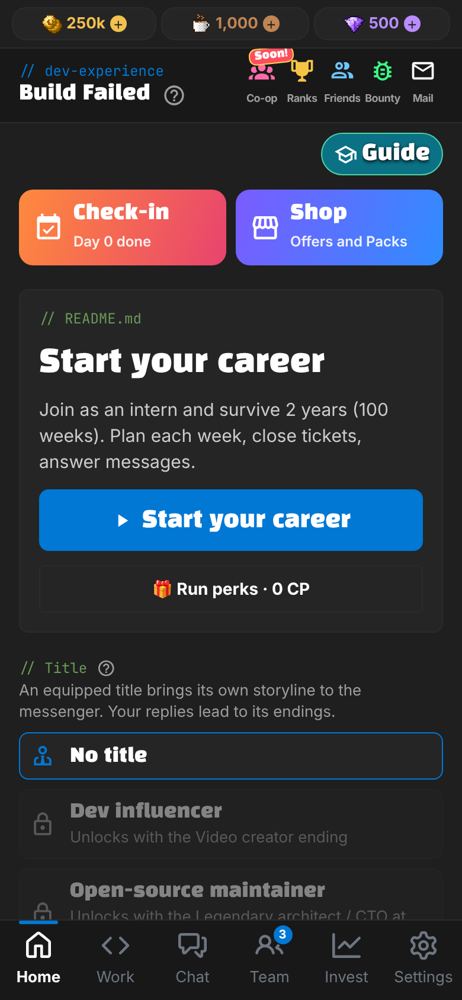
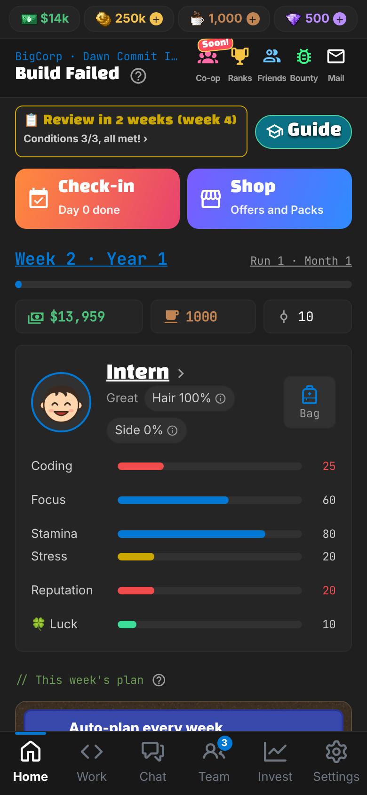
- Before a run: Start your career, Run perks (permanent bonuses bought with CP), and picking a title (the Titles page).
- During a run: at the top the week, run number (tap for past records), rank (tap for the Career screen), hair, side progress, Bag, stat bars (coding, focus, stamina, stress, reputation, luck), this week's schedule, this week's tickets, and Wrap up the week.
- The resource bar at the top: run money, coins, coffee, Mythic shards. Tap the coffee count to open the coffee window.
- Header icons: Leaderboard, Friends, Bug bounty, Mailbox.
Work 💻#
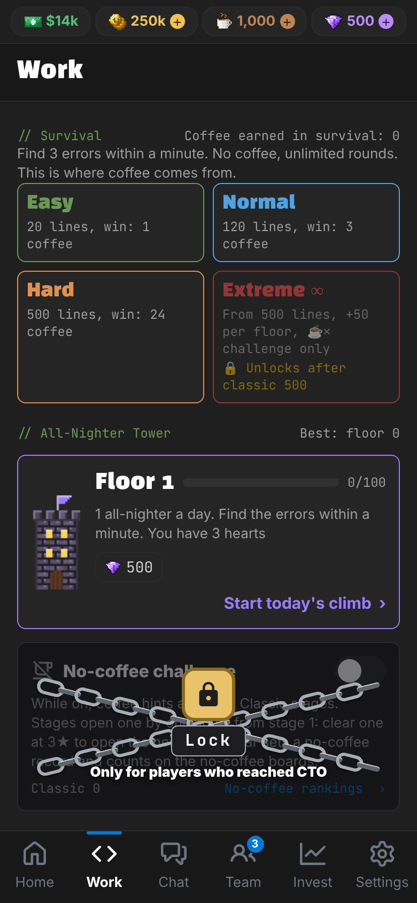
Messenger 💬#
| Screen | What it is |
|---|---|
| Messenger | Every message from your lead, senior, junior, heroines, family, recruiters and more. Where you pick replies |
| Family | Dating, marriage and parenting status. A red dot if this week's schedule is missing a date (while dating), parenting (with a child) or chores (married) |
| Just the Two of Us | Messages just for the two of you while living together or as newlyweds (Living together, newlyweds, album, family) |
| Album | Opens once a child is born |
| Team channel | Chats and crew stories with the crew you collected through cards (see Team channel below) |
Team 👥#
| Screen | What it is |
|---|---|
| Projects | 192 team projects you clear with your crew |
| Crew | Inside: list, Collection, Fusion, Mythic shards |
| Crew › list | Your crew cards, leveling up, skills, skill tree |
| Crew › Collection | See every crew card |
| Crew › Fusion | Make a crew member one tier up from duplicates |
| Crew › Mythic shards | Trade shards for Mythics, raise stars |
| Quests | Claim daily quest and challenge rewards |
| Codex | Endings, achievements, bugs (the ending codex) |
The number on the Team tab icon is quest rewards you can claim + codex rewards you can claim. When a number shows, always go in and claim!
Invest 📈#
| Screen | What it is |
|---|---|
| Stocks | Buy and sell with run money, market news |
| Real estate | Real estate by area |
| Collectibles | Investing in collectibles |
Investing only uses run money ($), and it disappears when the run ends. How it works and strategies are on the separate Investing page.
Your first run: tutorial chapters 1 to 4 🎓#
The first time you open the game, a 4-chapter tutorial runs on top of the real screens. Just tap where the finger points.
- Chapter 1, Classic stagesWork tab → Classic 1 teaches you to find errors, and you try using coffee (a hint) once. Classic 2 is on your own.
- Chapter 2, starting a career, CPLook around run records, Run perks and Titles on Home, then tap Start your career.
- Chapter 3, a taste of a 10-week runAfter a tour of the Shop, Bag, stats, schedule, tickets, Messenger and Invest, you play a 10-week sample run yourself. Machine learning and the recommended plan schedule are only tried here too.
- Chapter 4, check-in, crewDaily check-in, opening a card pack, crew, skills, skill tree, bond, fusion and Mythic shards. The last line is Now, shall we head to work for real?
Whether you finish the tutorial or tap End tutorial partway, 1 Epic Pack arrives in your mailbox (once per account). Be sure to claim it from the mailbox 🎁
Coins, gear and machine learning you get in the tutorial are not carried into the real game. The 10-week sample run also pays 0 CP and coins. You cannot be let go inside the tutorial either.
If you want to see it again later, pick a chapter from the Guide button on Home (no rewards the second time).
Classic stages and Career tracks: what's the difference? 🧩#
Both are solo code modes in the Work tab. Classic stages (called Classic challenges on screen) is the mode where you find and fix errors yourself; Career tracks is the mode where you judge O/X whether each line has an error.
| Classic stages | Career tracks | |
|---|---|---|
| What you do | Find and tap the wrong symbol in a file | Look at a line: O for an error / X for clean |
| Stages | 500, opening one at a time from 1 | 5 tracks, 1,200 per track (12 chapters of 100 each). Chapters are all open; stages inside a chapter open one at a time |
| Language | JavaScript | Differs by track (Frontend JS, TS; Backend Java, TS; Python/AI; Data SQL, Python; Full stack all 5) |
| Star criteria | 1 to 300: wrong answers / 301+: time | In each chapter, 1 to 80: accuracy / 81 to 100: time |
| Coffee reward | 1 coffee per new star (up to 3 per stage), up to 10 times a day on the same stage | |
Classic stages (called Classic challenges on screen) strategy#
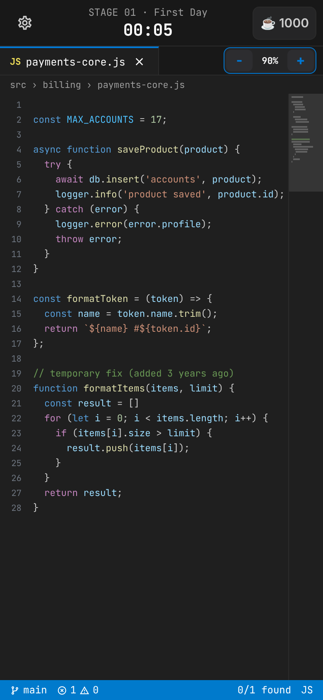
How to fix
- Check // Today's ticketBefore you start, it shows which kinds of errors to find in this stage. Tap Start working and the clock starts.
- Tap a suspicious lineWhen the line zooms in, tap the wrong symbol. For errors with a missing semicolon or colon, tap End (end of line).
- Stuck? CoffeeTap the ☕ button at the top right (Drink coffee) and the line with the error turns yellow. It costs 1 coffee.
- Watch out for wrong tapsA wrong tap adds 10 seconds. Take too long and the lead nags you, adding even more time.
Swipe sideways through long code, and tap or drag the minimap to jump straight to that line. You can change the text size with +− too.
The 13 error types and the order they appear
Stages 1 to 300 teach the errors one group at a time, and from 301 all 13 come mixed together.
| Stages | Errors that appear | Example |
|---|---|---|
| 1~20 | Missing semicolon (;) | return total |
| 21~40 | Mismatched brackets, ) where a closing brace } should be | fetch(url] |
| 41~80 | Review of the 3 above | |
| 81~100 | The letter O instead of the number 0 | limit = 1O0; |
| 101~120 | A colon where a semicolon goes, a semicolon where a colon goes | total = 0: |
| 121~160 | Review of everything so far | |
| 161~180 | A comma (,) where a period (.) goes, a period where a comma goes | user,name |
| 181~200 | Review | |
| 201~210 | Mismatched quotes | name = 'admin"; |
| 211~220 | Values with the wrong case | isActive = True; |
| 221~230 | Keyword typos (letters swapped) | retrun total; |
| 231~240 | Review of quotes, case and typos | |
| 241~250 | Wrong arrows (=> / ->) | items.map((x) -> x.id) |
| 251~260 | Full-width symbols typed with an IME on (；，) | count = 1； |
| 261~270 | Review of arrows and full-width symbols | |
| 271~300 | Quotes, case, typos, arrows, full-width symbols | |
| 301~500 | All 13 |
Career tracks strategy#
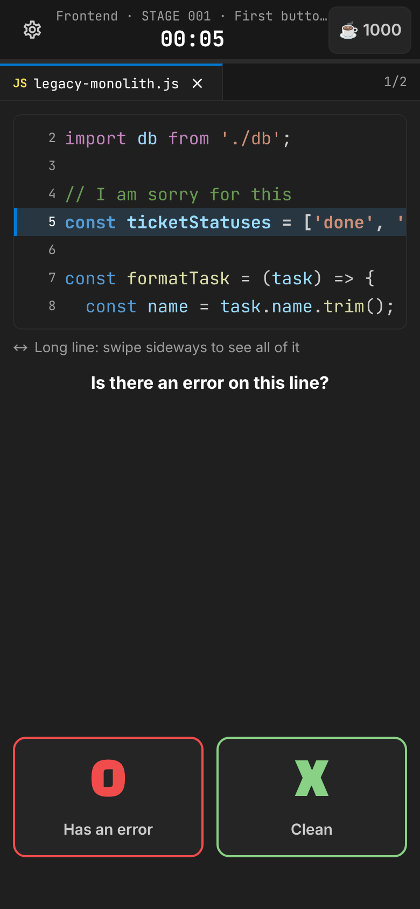
- 5 tracks: Frontend, Backend, Python/AI, Data, Full stack. You can switch any time, and records are kept per track.
- In each chapter, 1 to 80 teach errors by type, and 81 to 100 are the hell zone where every error appears.
- Stars: for 1 to 80, 60% accuracy is ★★, 80% is ★★★. For 81 to 100, time.
- Get one wrong and an error explanation appears, and the clock stops while you read it. Great for studying too 📚
- Size: stage 1 of a chapter starts with 2 checks (60 lines), stage 80 has 200, and stage 100 grows to 2,000 checks (100,000 lines).
Guessing (around 50% accuracy) never gets you past ★. To get ★★★ on 1 to 80 you need 4 right out of 5.
Save and quit#
Leave a Classic stage or Career track partway and it stays in Saved stages at the top of the Work tab with the same file, time and progress. There is 1 slot per mode, so saving another stage overwrites it. A resumed run still earns stars and coffee, but does not count for No-coffee records.
Career runs: how a week goes 📅#
Career is the mode where you join the big company, Dawn Commit Inc. as an intern and spend 100 weeks (2 years). These are your starting stats.
| Coding | Focus | Stamina | Stress | Reputation | Money | Commits |
|---|---|---|---|---|---|---|
| 25 | 60 | 80 | 20 | 20 | $2,308 | 10 |
Your lead's, senior's and junior's affinity starts at a random 5 to 15. Run perks can raise these numbers (Run perks below). Performance reviews are in week 4, then every 12 weeks (16, 28 … 88), and lastly week 99, 9 in all. Promotions are covered in detail on the Promotions, career, quitting routes page.
- Plan this week's schedulePut activities in 6 slots: Mon to Fri + the weekend.
- This week's ticketDo it myself or Rush it.
- Reply to messagesAnswer messages in the Messenger. Each reply changes stats and affinity.
- Wrap up the weekThe schedule, ticket, weekly pay and living costs are settled; if required messages come, answer them, then on to the next week.
Setting up this week's schedule#
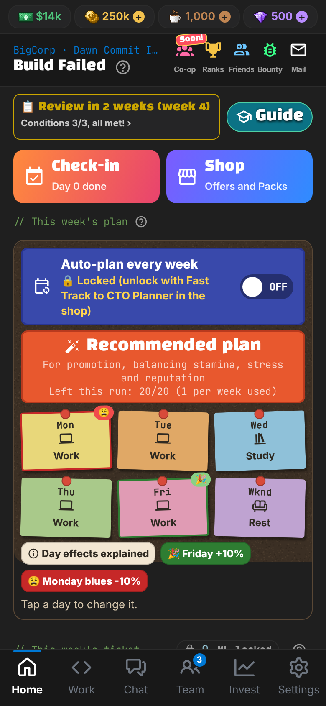
The base effect each activity gives in one day (it varies a little with company, gear and run perks). The weekend slot is a day and a half, so its effect is ×1.4.
| Activity | Upside | Downside | Weekend |
|---|---|---|---|
| 💻 Work | Performance 1.2, reputation 1, coding 0.5, commits 1 | Stamina -5, stress +4, focus -2 | Yes |
| 🌙 Overtime | Performance 2.2, reputation 2, coding 0.6, commits 1, $23 overtime pay at the big company | Stamina -10, stress +8, focus -4, hair -0.5 | No |
| 📚 Study | Coding 2, commits 5, focus +1 | Stamina -2, stress +2 | Yes |
| 🏃 Exercise | Stamina +9, stress -3, focus +2 | Yes | |
| 🛋 Rest | Stamina +8, stress -7, focus +4 | Yes | |
| 🚀 Side project | Side 0.7, commits 3, stress -2, coding 0.5 | Stamina -4 | Yes |
| 🍜 Team lunch | Stress -15, lead affinity +6, senior and junior +3, reputation 1 | Costs 15% of weekly pay | No |
| 💞 Date | Keeps the relationship going, stress -8, focus +1 | Stamina -2, money -$38 | Yes (when you have a partner) |
| 👶 Parenting | Keeps the family going, stress -2 | Stamina -5, money -$15 | Yes (when you have a child) |
Day effects (schedule bonuses)
| Effect | Condition | Result |
|---|---|---|
| 🔥 In the zone | The same activity (one of Work, Overtime, Study, Side) 3 days in a row | From day 3, that activity's effect +20% |
| 🎉 Friday | Work, Overtime, Study or Side on Friday | +10% |
| 😩 Monday blues | Work, Overtime, Study or Side on Monday | -10% |
| 😵 Overtime hangover | Work or Overtime the day after Overtime | Performance and reputation -30% (gone if you put Rest or Exercise in between) |
| ⭐ Review week | A week with a performance review | Performance ×1.5 |
| 🛋 Weekend ×1.4 | The weekend slot | ×1.4 whatever you put in |
| 💔 Weekend work | Work on the weekend while dating or married | Partner's affinity -2 |
If your lead's affinity is 50 or more and there is no Team lunch at all that week, lead affinity -3; from 80 up, expectations rise and it drops -2 every week.
One week's change by schedule, compared
A 1-week total for a starting intern, counting only the schedule slots. Tickets, messages and the company's weekly stress (big company +2) are left out.
| Schedule (Mon to weekend) | Performance | Stamina | Stress | Reputation | Coding |
|---|---|---|---|---|---|
| Default: Work, Work, Study, Work, Work, Rest | 4.3 | -10.8 | +8.2 | +4.0 | +4.0 |
| Work ×5 + Rest | 6.1 | -13.8 | +10.2 | +5.6 | +2.8 |
| Work, Work, Lunch, Work, Work, Rest | 4.3 | -8.8 | -8.8 | +5.0 | +2.0 |
| Work, Overtime, Rest, Work, Overtime, Rest | 6.2 | -10.8 | +7.2 | +6.1 | +2.2 |
| Overtime ×5 + Rest | 8.3 | -38.8 | +30.2 | +8.4 | +3.4 |
5 days of overtime gives the most performance, but costs 38.8 stamina a week. Starting at stamina 80, you collapse in week 3, and stress soon hits 100 too. Put rest days in between, like Overtime → Rest, to avoid the hangover (-30%) and keep your body going.
Tap Recommended plan and it plans your schedule for promotion. It is free 20 times per run, and tapping again in the same week does not use up a turn. But it only uses Work, Overtime, Study, Exercise and Rest (plus Lunch on weekdays) and rebuilds all 6 slots, so Date and Parenting slots disappear too. If you are dating or parenting, put those slots back after tapping 💞
Side project
Once Side passes 20, income comes in every week (bigger as progress grows). At 25 it is reputation +3, commits +20; at 50 reputation +6; at 75 $3,846 and reputation +4; at 100 reputation +10, commits +50, and the side project's own endings open.
This week's ticket#
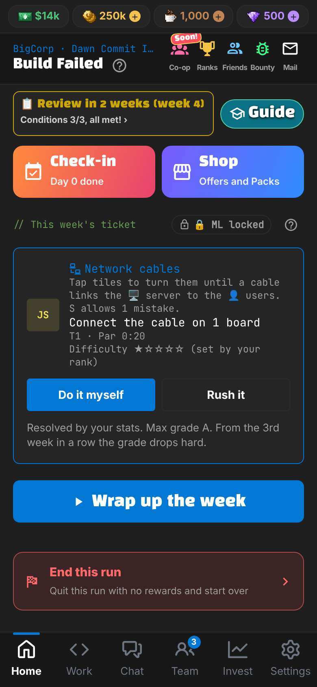
The 6 ticket types
One comes each week, and every 6-week block shows each of the 6 types once. The first week is always Bug fix, and the same type never comes 2 weeks in a row.
| Type | What you do | Coffee help |
|---|---|---|
| 🐛 Bug fix | Find the error in the code (the same way as Classic stages) | Highlights the error line |
| 🔍 Before/after check | Spot the difference between two screens | Shows 1 changed spot |
| 🔥 Server overload | Tap overheating servers to cool them down | Cools every server |
| 🚀 Deploy order | Turn things on, dependencies first | Marks 1 card you can turn on now |
| 🔌 Network cables | Rotate tiles to connect the cable | Fixes 1 tile |
| 📋 Log triage | Tap only the red ⛔ ERROR lines (also 🚨 CRITICAL at higher ranks) | Handles every ERROR on screen |
Except Bug fix, you don't need to know how to code. Up to Staff Engineer they are light (Bug fix has 1 to 5 errors, other types half the rounds). From Principal, Bug fix has 10 errors, and files and minigames grow with each rank.
Reading the ticket screen
Tap Do it myself on the ticket card and a rules screen comes first. Finish within the S target at the top to aim for S; the lines below say what to do in this ticket, what happens if you slip, and what 1 coffee helps with. Once you have read it, tap Start working.
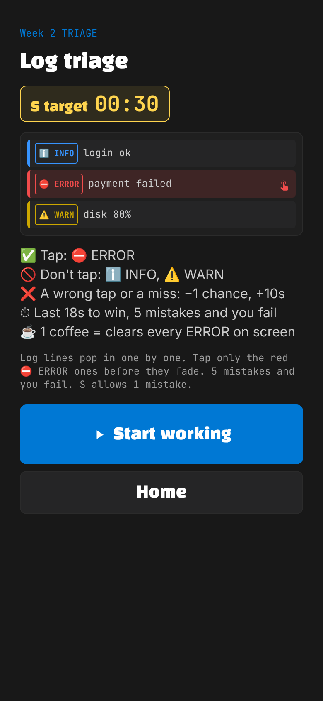
From Principal, minigames switch to a hard version (look-alike characters, time limits, dead-end forks and other traps appear). At even higher ranks, S needs 0 mistakes. What applies right now is shown as is on the rules screen.
🐛 Bug fix
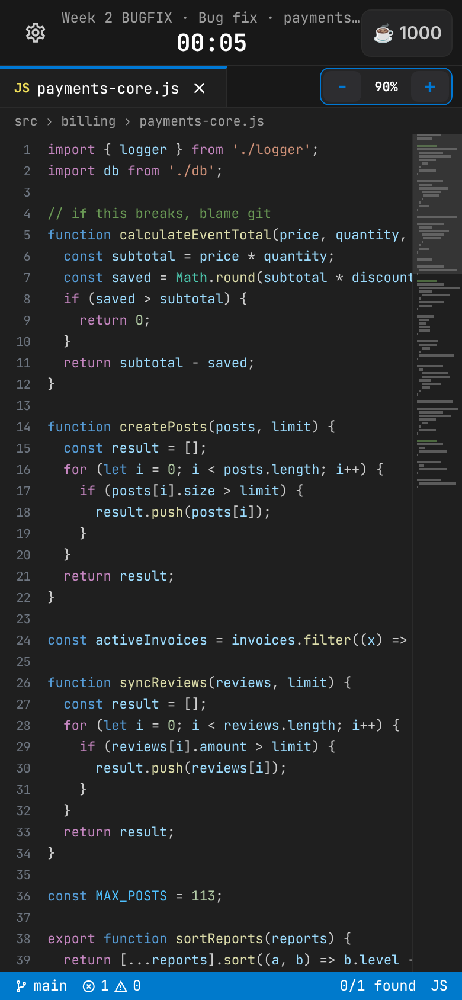
- Tap a suspicious lineJust like Classic stages. Tap a line and it zooms in.
- Tap the wrong characterTap the wrong symbol or character in the zoomed line to fix it. The 0/1 found in the status line below goes up.
- Stuck? CoffeeTap ☕ at the top right and 1 coffee marks the error line.
The first week of a run is always Bug fix. The higher your rank, the longer the files and the more error types.
🔍 Before/after check
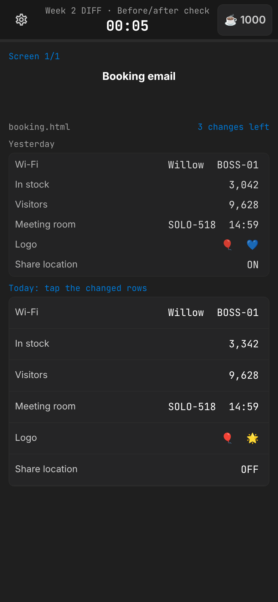
It is spot the difference. Compare yesterday's screen with today's and tap every line that changed in today's version. Numbers, words, emoji, colors and ON/OFF are changed. The count left shows at the top right, and tapping an unchanged line adds a time penalty. 1 coffee shows you 1 changed spot.
Go line by line from the top, comparing yesterday's and today's values in turn. In the hard version look-alike characters like O and 0 or l and I and times off by 1 minute change too, so checking number cells to the last digit is the safe way.
🔥 Server overload
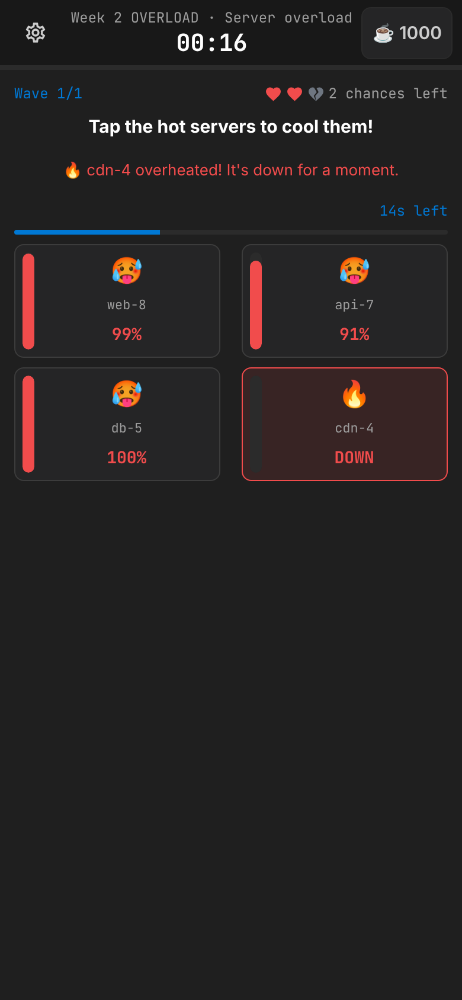
Tap a server card and its temperature drops to 0%. At 100% the server blows up and you lose 1 heart. Hold out until the wave timer ends to succeed; lose all your hearts and the ticket fails (C rank). 1 coffee cools every server at once.
Tap the hottest server first. The hard version mixes in ⚡ servers that heat up in a flash, so cooling those a little early makes it easier.
🚀 Deploy order
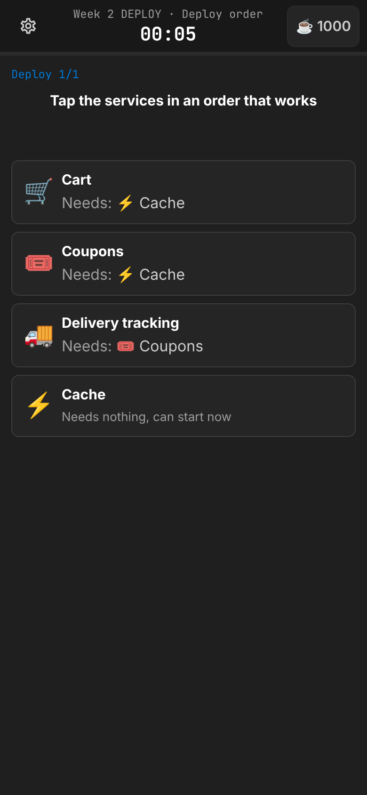
A puzzle where you tap service cards in an order they can be turned on. A card can only be turned on once every service under its Needs is on. In the picture above, first Caching, which needs nothing, then Shopping Cart and Coupons, and last Order Tracking, which needs Coupons. Tapping a card you cannot turn on yet adds a time penalty. 1 coffee puts a ☕ mark on a card you can turn on now.
🔌 Network cables
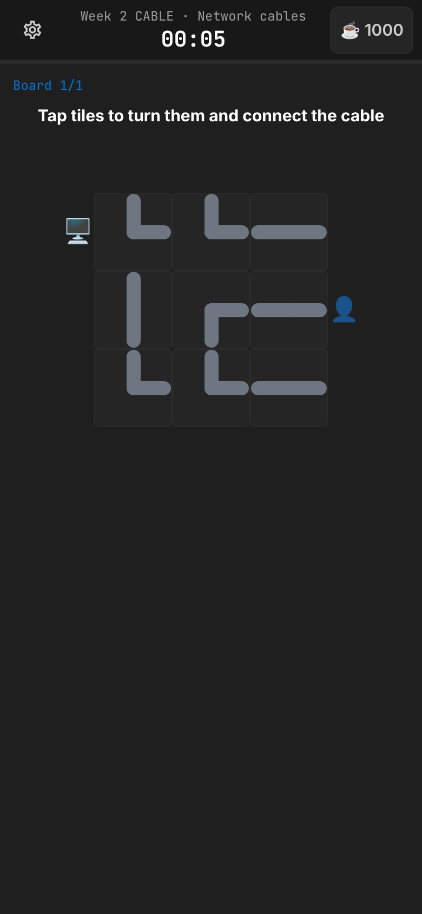
Each tap turns a tile 90 degrees. Once the server and the user are joined in one line, that board is done. 1 coffee fixes 1 twisted tile.
It is faster to follow the lit path from the server side and fix the next tile. The T and cross tiles in the hard version are often dead-end forks, so only worry about the path that reaches the user.
📋 Log triage
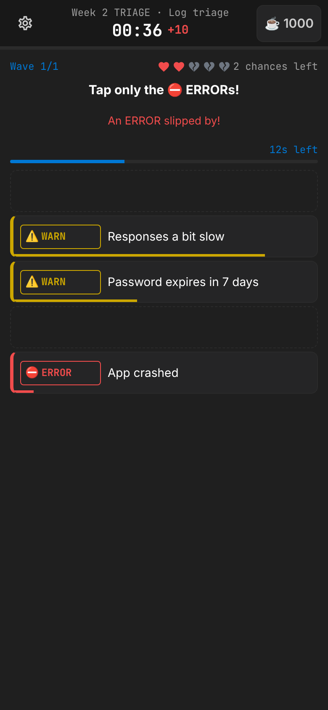
Log lines float up one by one and then disappear. Tap only the red ⛔ ERROR lines and leave ℹ️ INFO and ⚠️ WARN alone. A wrong tap or a missed ERROR costs 1 chance, and lasting the set time is a success. From Principal you must also tap 🚨 CRITICAL, and the text is made confusing on purpose. 1 coffee handles every ERROR on screen.
Don't read the text; just look at the tag color on the left. Think of it as tapping only red tags and your mistakes drop sharply.
Grade criteria
| Grade | Condition (the target time is longer with more errors and higher tiers) | Week close effect |
|---|---|---|
| S | Within the target time + 1 wrong tap or fewer | Reputation +3, lead affinity +2 |
| A | Within 1.6× the target + 3 wrong taps or fewer | Reputation +1, lead +1 |
| B | Within 2.6× the target | Lead +1 |
| C | Anything else | Reputation -2, lead -3 |
| Skipped | Closing the week without doing the ticket | Performance -3, reputation -3, lead -5, stress +3 |
A finished ticket can be redone until you get S, and only the better grade stays. Redoing it never drops you, so retry without worry.
At stress 70 or more, both Rush it and machine learning are blocked. Your lead tells you to do it yourself.
How stats affect tickets
| Condition | Effect |
|---|---|
| Stamina under 20 | +5 seconds of time penalty per wrong tap |
| Focus under 30 | The code dims to 55% of its usual brightness |
| Stress 70 or more | The lead nags twice as much, no auto handling |
| Coding 70 or more | The minimap faintly shows where the errors are |
| Senior's affinity 70 or more | Your senior finds 1 error for you when a ticket starts |
| Staff Engineer or higher + 100 / 200 / 300 tickets in total | Veteran bonus: errors -20% / -30% / -40% |
| Owning Legendary or Mythic crew | Fewer errors from each crew member's ticket passive (up to half together with Veteran) |
Stamina, stress, burnout, collapsing 🔥#
This is the most important part. The check happens at the week close, but it looks at the lowest stamina and highest stress you hit that week, not the numbers at the moment of closing. If one reply took your stamina to 0, it counts as collapsing even if weekend rest brought it back up.
| Situation | Condition | Result |
|---|---|---|
| 🤒 Collapsing | Stamina hit 0 even once that week | Sick leave the next week, stamina to 45 |
| 🔥 Burnout | Stress hit 100 even once that week | Reputation -10, hair -5, 2 weeks of rest, stress 40, stamina at least 50 |
| 🍗 3 burnouts | 3 burnouts in one run | The run ends with the fried chicken ending |
| 🛌 Rest weeks | Sick leave, burnout rest | Stamina +25, stress -25, focus +10. Schedule, ticket and dating checks are skipped |
| 💇 Stress 70 or more | At the week close | Hair -1 every week |
There are ways to prevent these too: the Calm down, buddy gear (blocks 1 burnout), Second wind (stamina 100 instead of collapsing), the Burnout shield overflow love perk after marriage, and the Health insurance and Golden parachute run perks. See Gear, supplies for gear and Heroine guides for perks.
Keep stamina above 0, and stress under 70. Stay within those lines and fill in Work and Overtime. 1 weekend slot of Rest and 1 lunch a week keep stress mostly under control.
Replying to messages, leaving them on read#
When you wrap up a week, messages pile up in the Messenger. Each reply changes stats and affinity, and a reply comes right back when you answer. Messages you did not answer last week are treated as left on read at the next close, and clearing notifications also counts as leaving them all on read. People with affinity (heroines, lead, senior, junior) lose affinity when left on read, so be careful. Tap a profile to pin it to the top.
End-of-run rewards: CP and coins#
| Reward | Condition | Amount |
|---|---|---|
| Career points (CP) | Runs played through all 100 weeks | More at higher ranks (intern 20, +1 per rank, CTO 29) |
| Coins | Runs played through all 100 weeks | More at higher ranks (intern 2,000, +100 per rank, CTO 2,900) |
| Card packs | Every time you see a new ending | A Rare Pack for normal endings, an Epic Pack for title endings |
| Ad double | Runs played for 10 minutes or more | CP and coins once more |
Runs that end before week 100, like being let go, the fried chicken ending or quitting to found a startup, pay 0 CP and coins (you still get new ending card packs and codex rewards). And a run that took less than 10 minutes gives no CP, coins or commit XP even after 100 weeks. If you quit to found a startup, it is 20 with no rank.
All currencies: coffee, coins, cards 💰#
The game has 5 currencies: run money ($, only within a run), coffee (hints), coins (gear, crew), Mythic shards and CP (run perks).
Every way to get coffee ☕#
Coffee is 1 per hint in Classic stages, Career tracks and tickets. It cannot be used in team projects. Claim the CTO ending's codex reward and you get infinite coffee (∞).
| Where | How much | Notes |
|---|---|---|
| Survival win | Easy 1, Normal 3, Hard 24 | Repeat as much as you like. Your main source of coffee. Extreme gives no coffee |
| Daily check-in | 5 a day | |
| Daily quests | 4, 5 each | Clear a team project, 1 All-Nighter Tower run, a 3-star clear, do a ticket yourself |
| Classic stages, Career tracks, team projects | 1 per new star (up to 3 per stage) | Up to 10 times a day on the same stage |
| Ad free coffee | 30 | Daily limit |
| Survival coffee ×2 | Coffee ×2 for that run | Automatic with ads or the ad-free pack |
| All-Nighter Tower | 1 per first clear of a floor (100 for 100 floors) | |
| Codex bugs | 5 per new error type | 280 coffees for 56 types across 5 languages |
| Friends | 3 (once a day per friend) | Via the mailbox |
| Today's Hotfix | 10 on weekdays, 20 on weekends | |
| Server Outage | Up to 20 (weekly) | By the share of errors everyone found |
| Season pass free row | 90 in total | The pass row totals 920 |
| Nickname draw | 100 (pass draw 1,000) | If you win |
Coffee shows as one pile, but coffee bought in the shop is tracked separately, and paid coffee is used first when you spend it.
Survival Hard is 24 coffees a run. Warm up on Easy (1) and Normal (3), and once you are used to it, Hard earns the most for your time.
Getting and spending coins 💰#
You start with 300 coins. Team projects give no coins.
| Where you get them | Amount |
|---|---|
| Finishing a run (100 weeks) | 2,000~2,900 |
| Daily quest Finish 1 run today | 2,000 + CP 20 |
| Daily check-in | 1,000 a day |
| First clear of an All-Nighter Tower floor | 100 per floor (10,000 for 100 floors) |
| Git Blame Relay | 2,000 every time the team fixes 3 |
| Today's Hotfix | 2,000 on weekdays, 3,000 on weekends |
| Server Outage | Up to 10,000 (weekly) |
| Season pass free row | 7,800 in total |
| Selling gear | 10% of the price paid |
| What you spend them on | Price |
|---|---|
| Card packs | Standard 2,000, Rare 8,000, Epic 20,000 (Legendary Packs cannot be bought) |
| Gear | See Gear, supplies |
| Crew level-ups | Pricier the higher the level (and more for higher grades) |
| Fusion | 1,000, 2,500, 50,000, 100,000 |
| Skill tree reset | 500 |
Card pack 🃏 odds and pity#
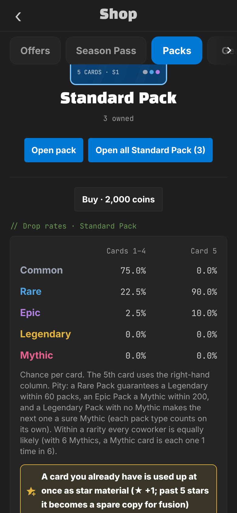
5 cards per pack. Cards 1 to 4 and card 5 (the guaranteed card) have different odds.
| Pack | Cards 1 to 4 | Card 5 | Pity |
|---|---|---|---|
| Standard Pack (2,000 coins) | Common 75%, Rare 22.5%, Epic 2.5% | Rare 90%, Epic 10% | No |
| Rare Pack (8,000 coins) | Rare 65%, Epic 35% | Rare 45%, Epic 54.7%, Legendary 0.3% | 1 Legendary or better within 60 packs |
| Epic Pack (20,000 coins) | Rare 50%, Epic 47.5%, Legendary 2.5% | Epic 89.5%, Legendary 10%, Mythic 0.5% | 1 Mythic within 200 packs |
| Legendary Pack (cannot be bought) | Epic 13%, Legendary 62%, Mythic 25% | Legendary 63%, Mythic 37% | If it ends with no Mythic, the next Legendary Pack guarantees one |
| Goal | Average | Median | 90% within | Chance in the first pack |
|---|---|---|---|---|
| Epic from Standard Packs | 5.3 packs | 4 packs | 11 packs | 18.8% |
| Legendary or better from Rare Packs | 54.5 packs | 60 packs | 60 packs | 0.3% |
| Legendary or better from Epic Packs | 5.3 packs | 4 packs | 11 packs | 19.1% |
| Mythic from Epic Packs | 126.8 packs | 139 packs | 200 packs | 0.5% |
| Mythic from Legendary Packs | 1.2 packs | 1 pack | 2 packs | 79.9% |
Mythic shards#
100 Mythic shards get you the Mythic crew member of your choice, and 30 give +1 star to a Mythic you own. A Mythic becomes a rainbow card at 5 stars. Shards come from All-Nighter Tower floors 30, 60 and 100 (every climb, up to 3 a day), the Season pass free row (20 in total), popularity, bug bounty rewards and more.
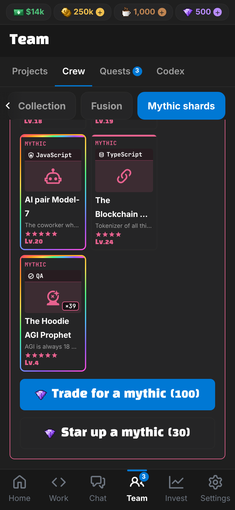
Get the Mythic card of your choice for 100 shards
- Tap Trade for a mythicWith 100 or more shards, the Trade for a mythic (100) button lights up.
- Pick a cardAll 6 Mythic crew show up. It is not a draw: you choose, so no luck needed. Under each card the result is written in advance, like Not owned or Owned ★3 (trading adds a star).
- Tap again to confirmThe first tap shows a yellow border and Tap again to confirm (100). Tap the same card again and 100 shards are spent and the animation plays.
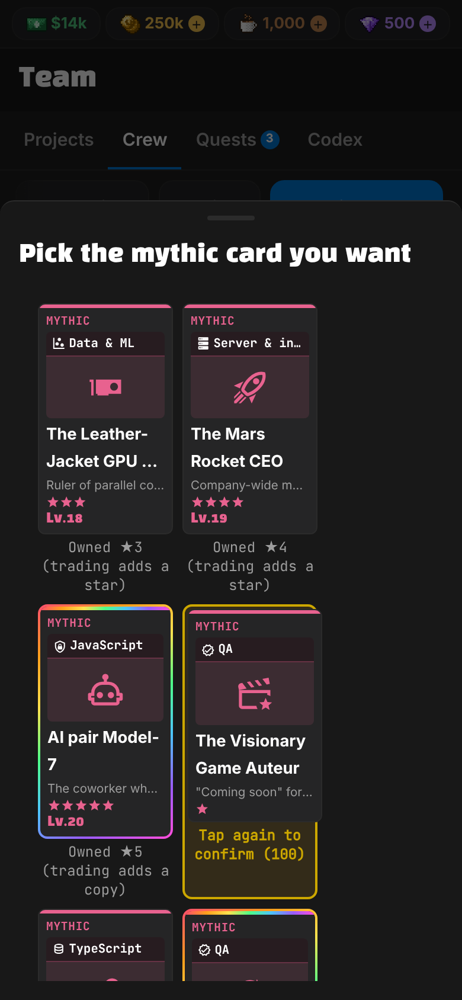
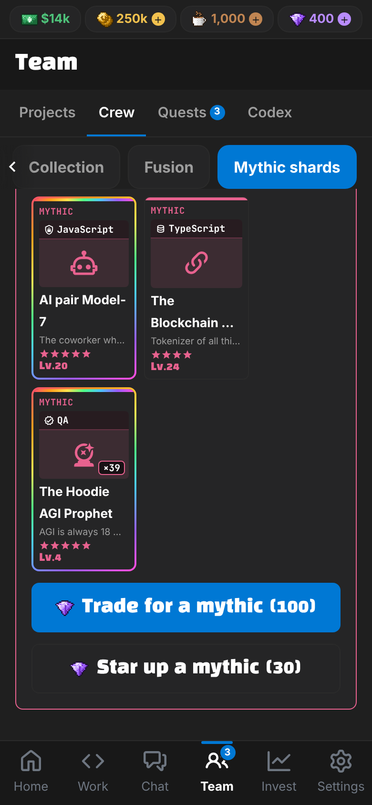
Raising a Mythic's stars with 30 shards
If you only want to raise the stars of a Mythic crew member you already own, Star up a mythic (30) is cheaper. Pick the card to raise, and again tap once more to confirm. Under each card you see the star change, like ★3 → ★4, and cards at 5 stars show (max) and cannot be picked.
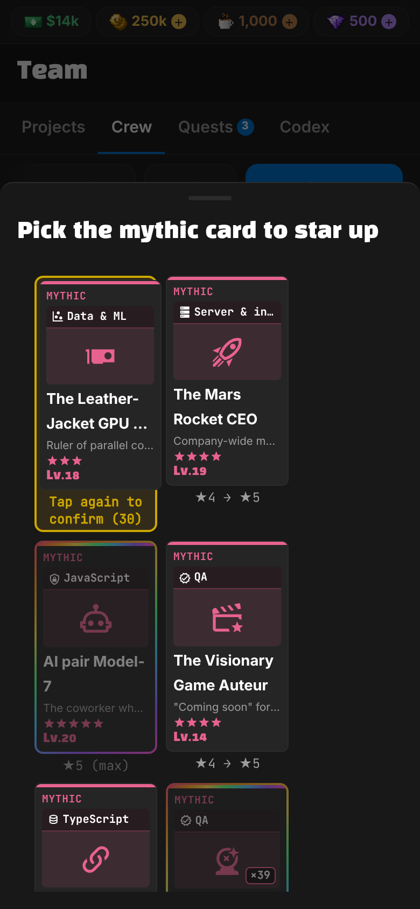
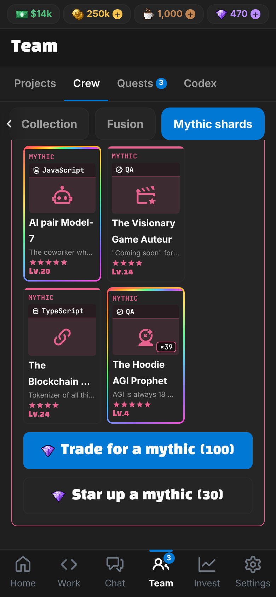
If there is a Mythic you don't have yet, it is best to bring in a new Mythic first with the 100-shard trade. Mythics are a must for the last stage of team projects, and some ticket passives are Legendary and Mythic only. Once you have all 6, raise stars 30 shards at a time.
The daily routine ✅#
Daily check-in#
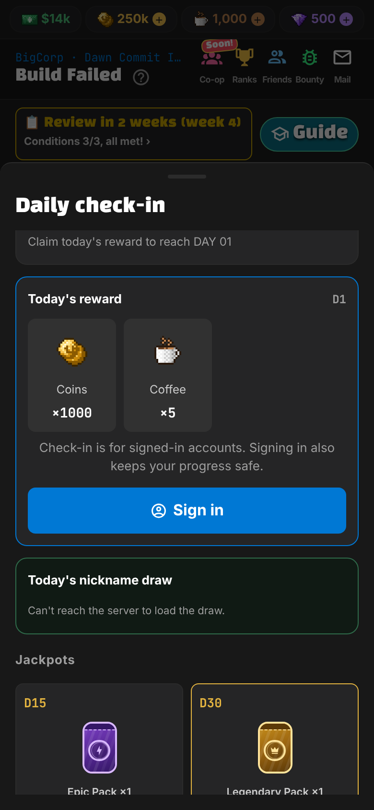
| Day | Reward |
|---|---|
| Every day | 5 coffee + 1,000 coins |
| Every 3 days (3, 6, 9 …) | + 1 Rare Pack |
| Day 15 | + 1 Epic Pack |
| Day 30 | + 1 Legendary Pack (then back to day 1 the next day) |
| Every 60 check-ins in total | 1 Mythic crew member (picked in the mailbox) |
Check-in only works for a signed-in account (guests see Sign in). Even if your streak breaks, the calendar slots and total check-ins stay. Checking in today also puts you in tomorrow's Nickname draw.
Quests#
Daily quests reset at midnight; challenges are once only. When you meet the condition, you must tap Claim in Team tab › Quests to get it. Each daily quest also gives 200 commit XP.
| Daily quests | Reward |
|---|---|
| Finish 1 run today (100 weeks, 10+ minutes) | CP 20, 2,000 coins |
| Clear 1 team project | 5 coffee |
| Play the all-nighter once | 5 coffee |
| Clear a team project with 3 stars | 5 coffee |
| Do this week's ticket yourself once | 5 coffee |
| Today's ending (marriage → let go → dating → parenting → child at university, rotating day by day) | 1 Standard Pack |
| Finish 3 runs | 1 Rare Pack |
Challenges are tiered, so only the current tier shows: team project stars, packs opened, endings, crew levels, crew recruited by grade, crew count, big project clears (lines), project count, bond hearts, Classic stars, Career track stars, first Survival clears by level, and finished runs. Early tiers pay a Standard Pack, later tiers a Rare Pack.
Rewarded ads#
| Ad | Reward |
|---|---|
| Double run rewards | CP and coins once more for a run played 10+ minutes |
| All-Nighter Tower revive | Start again with full hearts on the floor you fell on |
| Survival 2× | Double the coffee from a won run |
| Free card pack | 1 Standard Pack |
| Free coffee | 30 coffee |
Each ad has a daily limit, and the count left shows on the button. With the ad-free pack you get them right away with no ads.
Season pass (commit XP)#
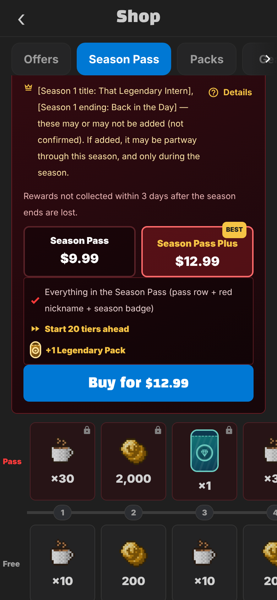
During a season (this season is New Hire Season, 60 days), you gain 1 tier per 1,000 commit XP, up to tier 50. Anyone gets the free row; only Season pass buyers get the pass row. You can still claim for 3 days after the season ends.
| How to get commit XP | XP |
|---|---|
| Finishing a 100-week run (10+ minutes) | 1,000 |
| Clearing Classic and Career track stages | 50 (★★★ 100) |
| Clearing team projects | 150 |
| All-Nighter Tower | 3 per floor (120 for 40 floors) |
| Survival win | Easy 30, Normal 50, Hard 80, Extreme 100 per floor |
| Daily quests | 200 each |
The daily cap is 2,000 XP (including daily quests), and the same stage or project only gives XP up to 3 times a day. So tier 50 (50,000 XP) takes 25 days at the very fastest. A little every day is the answer.
| Row | Total up to tier 50 | Tier 50 reward |
|---|---|---|
| Free | 90 coffee, 7,800 coins, 20 Mythic shards, 8 Standard Packs, 6 Rare Packs, 3 Epic Packs | 20 Mythic shards |
| Pass | 920 coffee, 66,000 coins, 50 Mythic shards, 10 Rare Packs, 8 Epic Packs, 1 Legendary Pack, 1 Mythic crew member | A Mythic of your choice + 30 shards |
Past tier 50, every 1,000 XP adds a ? bonus box to each row. Free box: 10 coffee (40%), 200 coins (40%), a Standard Pack (20%). Pass box: 50 coffee (32%), 1,000 coins (32%), a Rare Pack (28%), an Epic Pack (7.5%), 1 Mythic shard (0.5%).
Mailbox#
Tutorial rewards, check-in, choosing Mythic crew from the codex, friend coffee, draw wins, yesterday's unclaimed All-Nighter Tower rewards and more gather here. It is the icon at the top right of Home. Claim a Mythic crew member in the mailbox and a picker window opens.
Crew and team projects 👥#
Crew cards#
There are 84 crew members (Common 24, Rare 22, Epic 17, Legendary 15, Mythic 6). You start with 5 (Ashley, Choi, Jung, Oh and Park) and 1 Standard Pack. Crew only work in team projects (they do not find things for you in career tickets; only Legendary and Mythic ticket passives are the exception).
- Stats: speed (lines scanned per second) and accuracy (the chance of noticing an error it passes; low means false alarms).
- Level: up to 30 with coins. Leveling up also gives skill tree points.
- Stars: get the same card again and it gains +1 star right away (up to 5). After that they pile up as Copies and become fusion material.
- Specialty: 1.5× faster in that language, and better at finding that error type.
Fusion#
| Material | Coins | Result (always succeeds) |
|---|---|---|
| 2 Common copies | 1,000 | A random Rare |
| 2 Rare copies | 2,500 | A random Epic |
| 5 Epic copies | 50,000 | A random Legendary |
| 4 Legendary copies | 100,000 | A random Mythic |
A feature where you pool cards of the same grade to get 1 random crew member one grade higher. Every crew member of that grade has the same chance, and fusion always succeeds. If you already have the one you get, it gains 1 star; at 5 stars, 1 copy piles up.
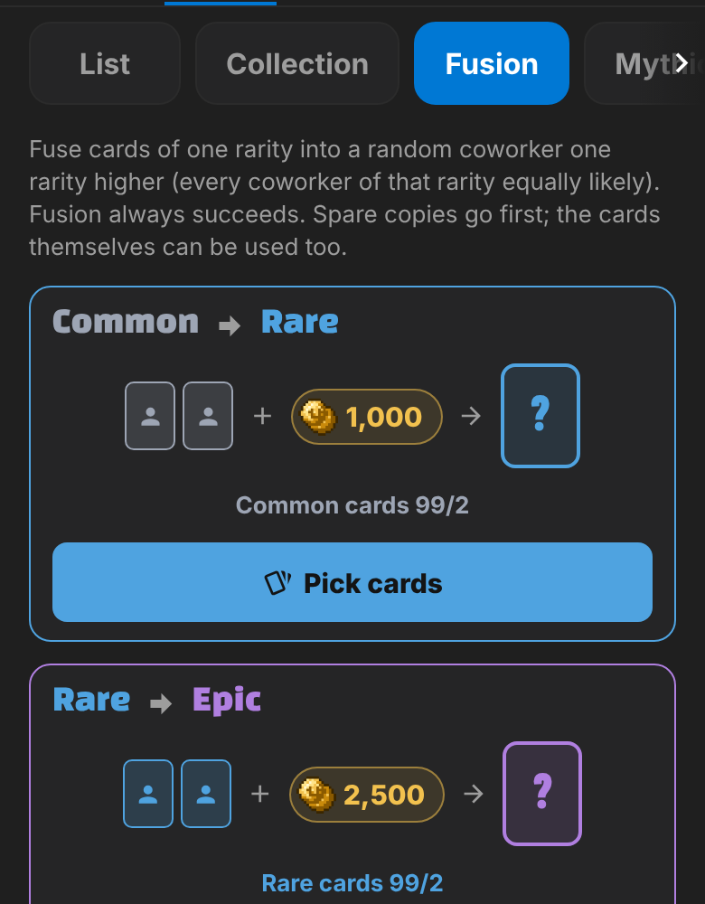
- Open the Fusion tabGo to Team tab › Crew › Fusion.
- Tap Pick cardsTap Pick cards in the slot of the grade you want to fuse.
- Add materialsEach tap on a card adds 1 material. Copies are used first; with no copies, the card itself becomes material. Once it is full, tap Fuse.
- ConfirmTap OK in the Really fuse? window and the new crew member appears with an animation.
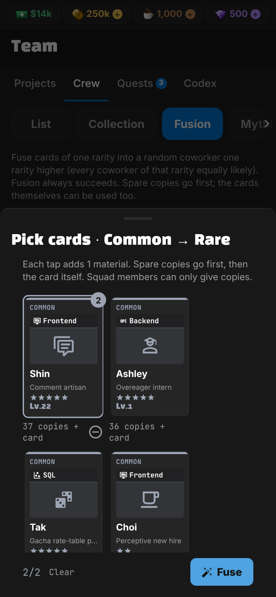
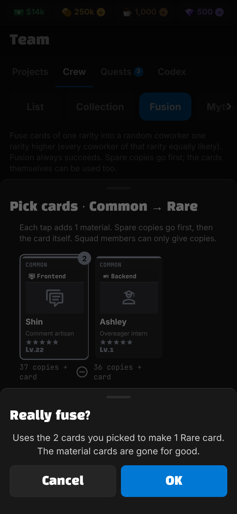
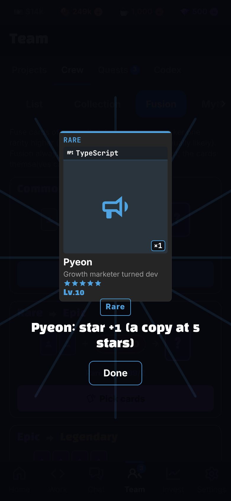
When you pick fusion material yourself, you can put in the card itself, not only copies. Using the card itself removes that crew member from your list (a red warning appears on screen).
It is best to fuse only with spare copies. Copies from a card already at 5 stars are only good for fusion, so put them in freely. 4 Legendary copies give a Mythic crew member, so save your Legendary copies.
Team projects and team power#
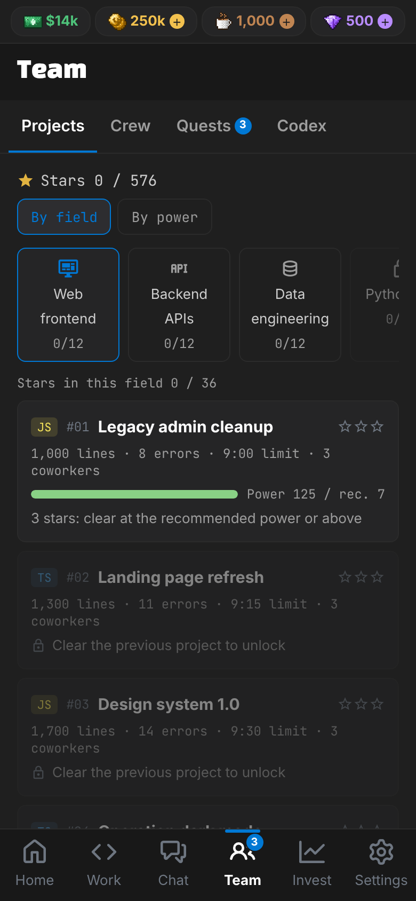
- 16 fields with 12 each, so 192 in all. 3 fields are open at first, and every 3 projects you clear opens 1 more field. Within a field they go in order.
- Files start at 1,000 lines, and the last one (the final, Mythic only) is 80,500 lines.
- Team power grows with the speed and accuracy of the crew you bring. Specialists in that language get 1.5× speed and +5% accuracy.
- If team power is even 1 below the recommended power, overload cuts speed to 1/4 and skills cannot be used, so you almost always fail. Win at or above the recommendation and it is always 3 stars.
- If a line your crew put in the report box is real, tap Fix; if not, False Alarm. Fixing a clean line costs 8 seconds, and a wrong tap of your own costs 3. Coffee cannot be used.
- Win during a run and that week's performance gets +1.5 / 2.5 / 4 (1/2/3 stars, a little different by company, up to 6 a week). Handy right before a review.
- Crew combos: bring set crew members together and the whole team gets a bonus (23 kinds). For example, QA duo (Jung + Moon) is -25% wrong reports. Active combos show in green on the lineup screen.
Skill tree#
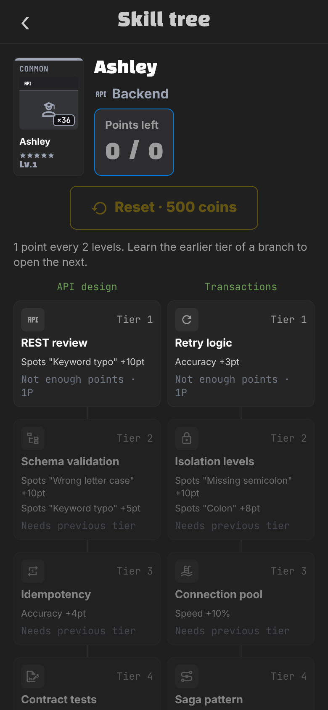
Each crew member's tree depends on their field (frontend, backend, server & infra, database, security, data & ML, QA). Spend the points from leveling, and if you don't like the result, reset for 500 coins.
Team channel and bond#
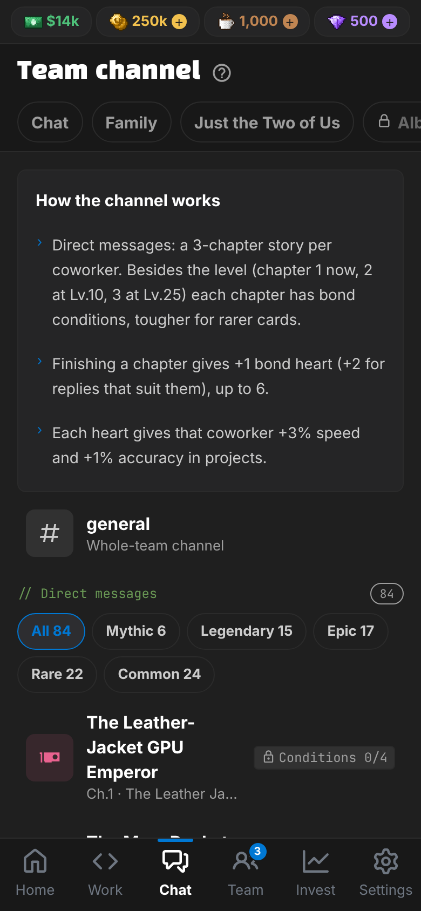
Each crew member you collect through cards has a 3-chapter story, and finishing a chapter raises that member's bond hearts. Hearts make that member work better in team projects. The #general room is where you watch project reactions and welcome messages.
Opening a chat room
- Go to the Team channelTap Team channel in the switch at the top of the Messenger tab. A number on the tab means new posts or an open story.
- Pick a crew memberTap a crew member in the Direct messages list. You can filter with the grade chips on top (All, Mythic, Legendary…); members with an open story show New story, and those still locked show how many conditions are met, like conditions 1/3.
- Clear notificationsWhen notifications pile up, Clear N notifications at the top marks them all read at once. The stories themselves stay.
Checking each chapter's conditions
Tap the Check ch.1 bond conditions button under a chat room or enter the room, and a Bond conditions panel attaches on top. Each condition shows ✓ or ✗ and its progress (e.g. 0/10), and tapping a condition takes you straight to that mode. Meet them all and the button changes to New story.
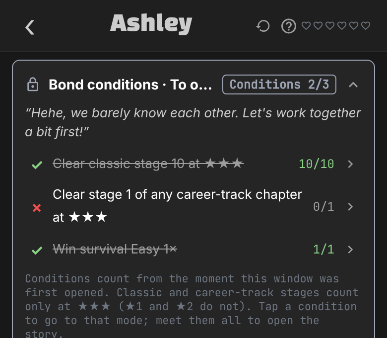
- Level conditions: chapter 1 right away, chapter 2 needs that crew member at Lv.10, chapter 3 at Lv.25.
- Conditions count from when you first open the panel. Play from before that does not count, so whenever you get a new crew member, open their chat room once first. With several members' panels open, one play fills them all at once.
- Classic stages and Career tracks only count ★★★ clears.
| Grade | Ch. 1 | Ch. 2 | Ch. 3 |
|---|---|---|---|
| Common | Classic 10, track 1, Easy ×1 | Classic 30, track 5, Easy ×2 | Classic 50, track 10, Easy ×3 |
| Rare | Classic 101, track 20, Easy ×5 | Classic 133, track 30, Easy ×10 | Classic 166, track 40, Easy ×15 |
| Epic | Classic 200, track 50, Normal ×1 | Classic 233, track 60, Normal ×5 | Classic 266, track 70, Normal ×10 |
| Legendary | Classic 301, track 81, Hard ×1 | Classic 350, track 85, Hard ×3 | Classic 400, track 90, Hard ×5 |
| Mythic | Classic 450, track 91, Extreme floor 1, Media · Streaming #12 | Classic 475, track 95, Extreme floor 2, Public sector #12 | Classic 500, track 100, Extreme floor 4, Open source #12 |
In the table, Classic means ★★★ on that stage number, track means ★★★ on that stage number in any chapter, Easy, Normal and Hard are Survival wins, Extreme is the floors cleared in one run, and #12 is team project 12 in that field. Chapters 2 and 3 add level conditions.
How to reply
Tap New story and the crew member starts sending messages. When it is your turn, Choose a reply and 2 or 3 replies appear below; tap one and the story goes on. Reach the end and Story complete, bond up appears, with the next chapter's conditions panel attached.
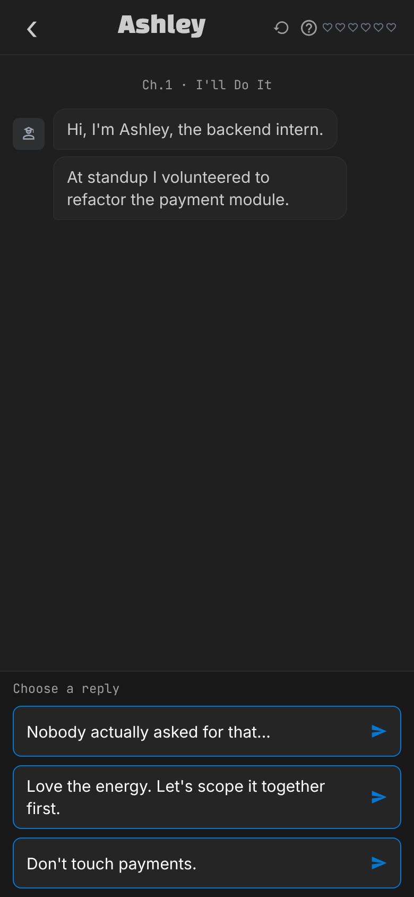
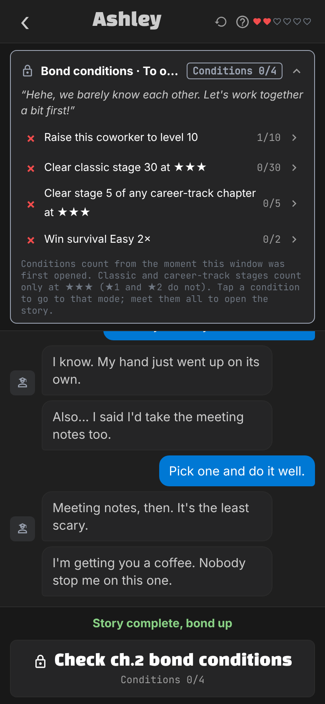
How bond hearts build up and what they do
- Finishing a chapter is +1 heart, and picking replies that fit that crew member well makes it +2. Finish all 3 chapters at +2 and up to 6 fill. You can see them right away in the 6 heart slots at the top right.
- Each heart gives that crew member speed +3% and accuracy +1% in team projects. 6 hearts is speed +18% and accuracy +6%, a noticeable boost to team power.
- Stories only give hearts (no coffee or coins).
- If your replies did not go well, a Bond Reset Ticket takes that member's hearts and chats back to the start. When you chat again, the good replies show with a yellow border. Buy the ticket in the shop or with the ↺ button at the top right of the chat room (you can also buy it with 5,000 coffee).
Challenge modes in the Work tab 🏆#
Survival#
| Level | File | Coffee for a win | Notes |
|---|---|---|---|
| Easy | 20 lines | 1 | The answer line numbers show in yellow |
| Normal | 120 lines | 3 | |
| Hard | 500 lines | 24 | Your main source of coffee |
| Extreme | From 500 lines, +50 lines per floor (up to 2,000 lines) | 0 | Unlocks after clearing Classic 500. For the rankings |
A coffee-earning mode you can play as many times as you like: find 3 errors within 1 minute and get coffee. Get the feel on Easy, and once your hands know it, move up to Hard (24 coffees a run) ☕
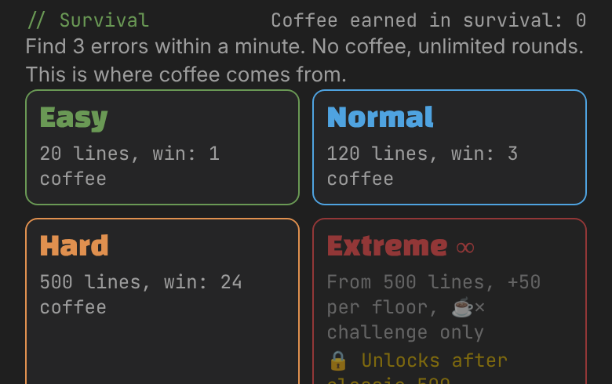
3 errors in 60 seconds, no coffee, and a wrong tap costs 5 seconds. Play as many times as you like. Extreme starts at 90 seconds, adds 30 seconds to your remaining time for each floor (3 errors) you clear, and the next file grows 50 lines (up to 2,000 lines, wrong taps cost 10 seconds). Leaving mid-run counts as a loss.
How to play a run
- Pick a difficultyIn Work tab › Survival, tap Easy, Normal or Hard. Extreme opens after you clear Classic 500.
- Check today's workThe 3 errors to find are shown. On Easy the answers are shown as is (which line, what to change into what). Tap Start working and the clock starts.
- Tap the line, then the wrong spotTap a suspicious line to zoom in, then tap the wrong symbol to fix it. On Easy, the lines with yellow circles on the left line numbers are the answers.
- Get the resultFind all 3 and Deployed! and your coffee come in. Tap Double the reward with an ad to get that run's coffee once more (automatic with the ad-free pack). Tap Another round to go straight on with a new file.
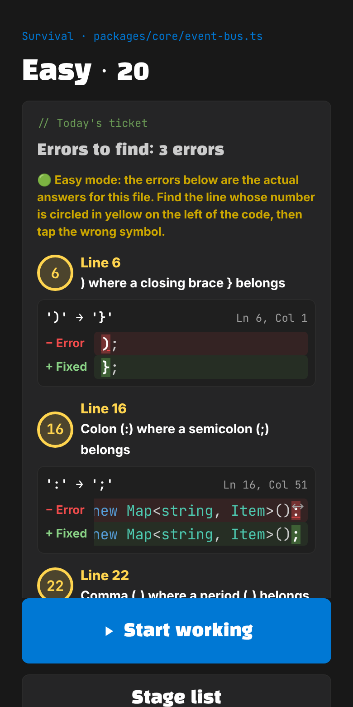
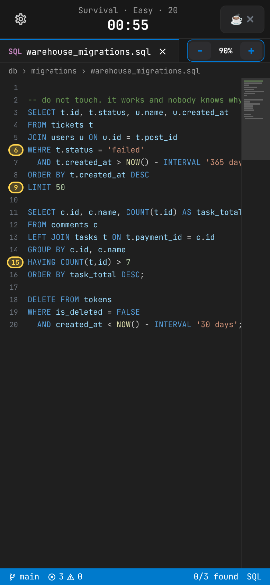
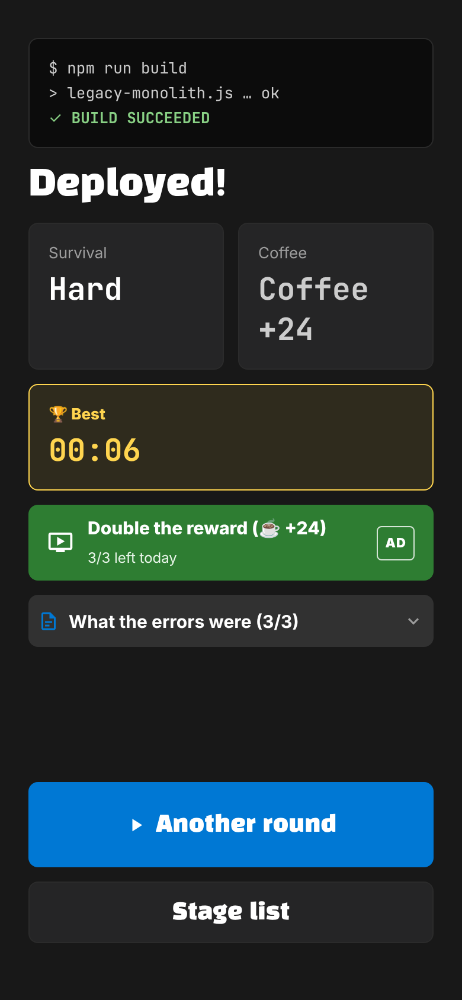
- Files are made fresh every run, so you cannot memorize them. But the same error types repeat, so your eyes get used to them quickly.
- Your fastest time for each difficulty stays as 🏆.
- Won runs also count toward Team channel bond conditions (win Survival Easy, Normal, Hard N times). Open the conditions panel first, then play.
- Extreme is a mode with no coffee, competing only for leaderboard rank. Rankings are in the Leaderboard.
Leaving a run you started, or tapping Restart in the pause menu, counts as a loss and breaks your win streak. Closing the app does the same.
Hard is 500 lines, so it is tough at first, but a win is worth 24 times Easy. Scan the whole file with the minimap and look first for errors that stand out, like bracket pairs, colons and semicolons, and your win rate goes up.
All-Nighter Tower#
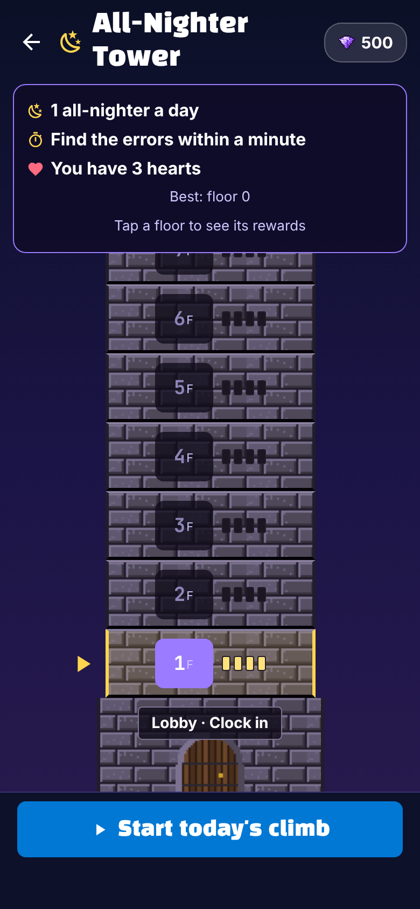
- You climb from floor 1, once a day. Each floor gives 1 minute and 3 hearts, and real coffee cannot be used.
- Each floor gives fresh supplies: Night coffee (fixes 1 error at once), Energy drink (from floor 5, +1 heart), Midnight snack (from floor 7, +15 seconds). Leftovers do not carry to the next floor.
- All-nighter crew join when you clear floors 1, 9, 24, 44 and 69. All-nighter gear appears at floor 15 (noise-canceling headphones, fake reports -40%), floor 35 (a second monitor, speed +15%) and floor 60 (a mechanical keyboard, the first mistake on each floor costs no heart).
- Size: floors 1 to 30 are 150 to 1,455 lines (3 to 6 errors), floors 31 to 60 are 2,000 to 13,000 lines, and floors 61 to 100 go up to 20,000 lines (up to 27 errors).
- Fail and that day's climb is over. Revive with an ad (or the ad-free pack) to redo the floor you fell on from the start.
- From floor 31 you must be online to climb.
| Reward | What you get |
|---|---|
| First clear of a floor | 100 coins + 1 coffee (clear all 100 floors for 10,000 coins and 100 coffee) |
| First clear of floors 30 / 60 / 100 | + Standard Pack / Rare Pack / Epic Pack |
| Floors 30 / 60 / 100 (every climb) | 1 Mythic shard (up to 3 a day) |
How to climb a floor
- Start the climbEnter from the All-Nighter Tower card in the Work tab and tap Start today's climb. When you carry on climbing, the button changes to something like Take on floor 17.
- Check the floor info and suppliesYou see the floor's line count, error count, rules, the supplies you get on this floor, Night crew and Night gear. Tap Start the night and the 1 minute starts.
- Handle the inboxWhen the night crew find a suspicious line, it goes up to the Inbox below. If it is a real error, tap Fix; if not, False Alarm. Fixing a fake report costs 1 heart. You can also tap a line and fix it yourself.
- Use suppliesThe row of icons under the code is your supplies. Tap one and it is used at once. Fix every error and the floor is cleared; you move on to the next.
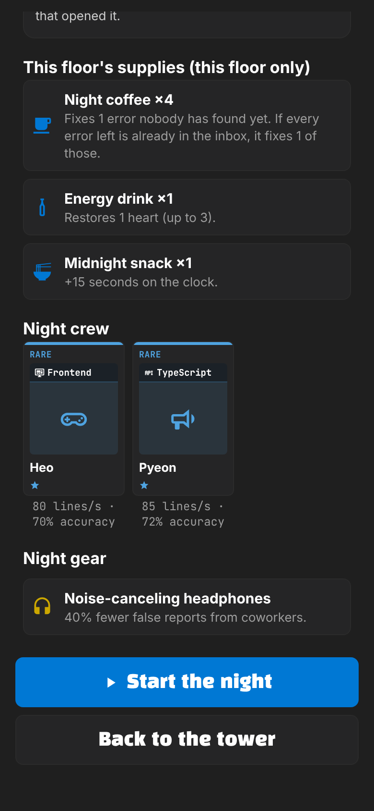
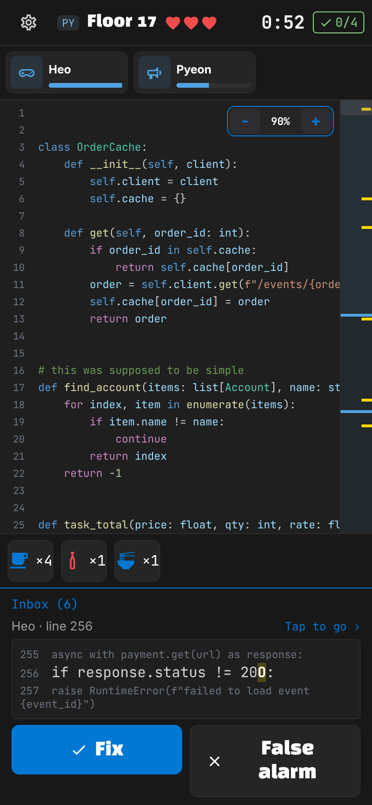
Night supplies at a glance
| Supply | Floors | Effect |
|---|---|---|
| ☕ Night coffee | Every floor (as many as the errors up to floor 30, about 70% of the errors above that) | Fixes 1 error nobody has found yet. If every remaining error is already in the inbox, it fixes 1 of those |
| 🥤 Energy drink | 1 per floor from floor 5 | Restores 1 heart (up to 3) |
| 🍜 Midnight snack | 1 per floor from floor 7 | +15 seconds of time left |
Supplies are set for each floor and only usable on that floor. You cannot carry leftovers to the next floor, so use them all before you go up. Real coffee (the ☕ currency) is not used here, so it does not go down.
How to collect floor rewards
- Find the yellow Collect markA yellow Collect appears to the right of cleared floors that have something to collect. The note box at the top also says N rewards waiting.
- Tap the floorTap that floor and the Floor N rewards window opens. The first-clear reward (100 coins, 1 coffee, and card packs on floors 30, 60 and 100) and the Mythic shard slot show Ready to collect.
- CollectTap Collect at the bottom of the window and you are done.
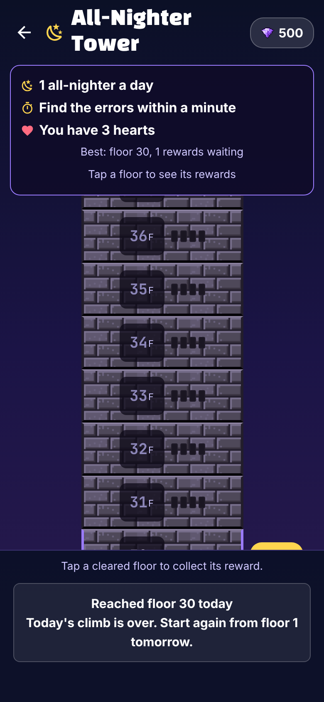
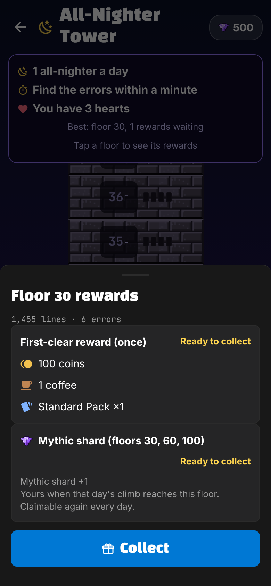
Rewards you did not collect that day gather the next day in the mailbox as an All-nighter rewards letter. Just tap Claim in the mailbox, and if you forget that letter too, it comes in on its own a day later. So there is no worry about missing rewards.
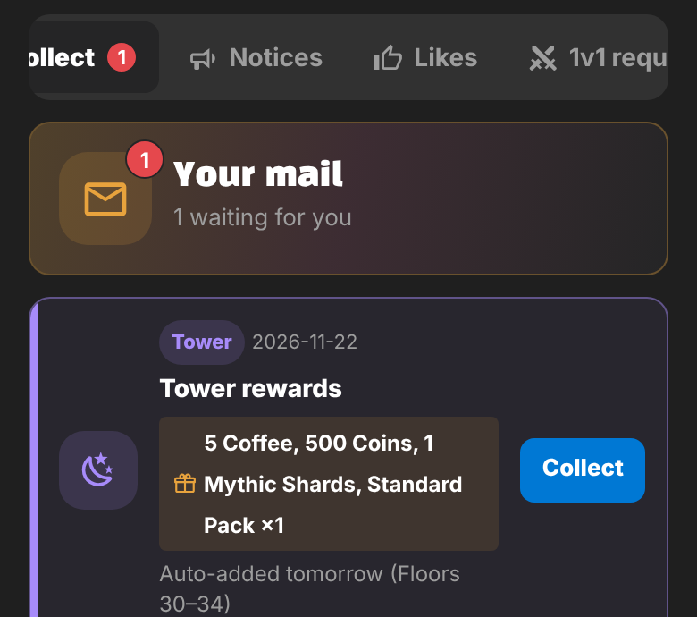
Save night coffee until the end of the floor. Let your crew find things first and use it on the errors left; that pays off. You cannot take it to the next floor anyway, so use it all before you go up.
No-coffee challenge#
A switch only accounts that have seen the CTO ending can turn on (Work tab). With it on, you cannot use coffee hints in Classic, and you climb separately from stage 1 (clear the stage before with no coffee ★★★ to open the next). Only stages cleared with ★★★ go on the no-coffee record (☕ ✕) and the No-coffee Classic leaderboard. A no-coffee clear still gives the normal clear reward. Career tracks are not included.
With friends 🤝#
Sign in and set your nickname in the Leaderboard first. After that, just doing the daily hotfix and friend coffee, plus the weekly Blame Relay and Server Outage, keeps coins and coffee coming in steadily ☕
Every feature below opens only after you sign in with a Google, Kakao or Apple account and set a nickname. You set the nickname in the Leaderboard (2 to 12 characters: Korean, English letters, digits), and once set it cannot be changed. Most of them sit as tabs inside the Friend icon at the top of Home.
| Feature | How often | Where | Reward |
|---|---|---|---|
| Popularity (likes) | Every day | Profile, Popularity tab in the mailbox | Packs, coins, coffee and CP every tier step, a Mythic crew member at Master 10 |
| Git Blame Relay | Weekly | Friend › Blame | Up to 24,000 coins + an Epic Pack |
| Today's nickname draw | Every day | Daily check-in, mailbox notice | From 3 Epic Packs up to 1,000 coffee |
| Today's hotfix | Every day | Friend › Hotfix | Weekdays 2,000 coins + 10 coffee, weekends 3,000 coins + 20 coffee |
| Server Outage | Weekly | Friend › Outage | Up to 10,000 coins + 20 coffee + a Standard Pack |
| Friends and coffee | Every day | Friend › Friends | 3 coffee to a friend |
| Leaderboard | Always | Home › Leaderboard | Rank |
| 1v1 code review | Always | Profile › Challenge to 1v1 | Record (no currency) |
| Bug bounty | Always | Home › Bounty | Legendary Packs, coffee, Mythic shards, even Mythic crew |
Popularity (likes) 👍#
Popularity is the number of likes other players have given you. As they add up your tier rises from Bronze to Challenger, and every step within a tier gives you a reward. You cannot raise it yourself; it only goes up when others tap it.
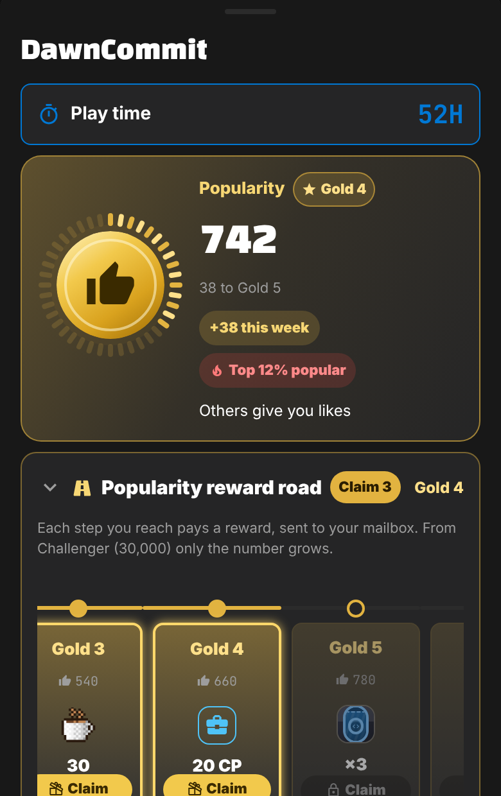
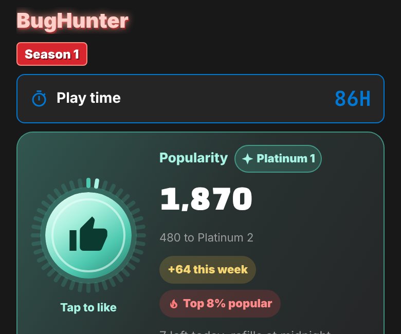
How to give and get likes
- Open a profileTap a name in the Leaderboard or a friend in your friend list and their profile opens.
- Tap the medalIf Tap to like shows under the medal in the popularity panel, tap it. To the right, N left today, refills at midnight shows how many more you can give today.
- Once a day to the same person. If you already gave one, it changes to Liked today. One person can get up to 40 likes a day, so you cannot give one to someone who is full that day.
- Like backWhen someone likes you, their name shows in the Popularity tab of the mailbox. Tap Like back to return it right away, so if you trade likes you both go up.
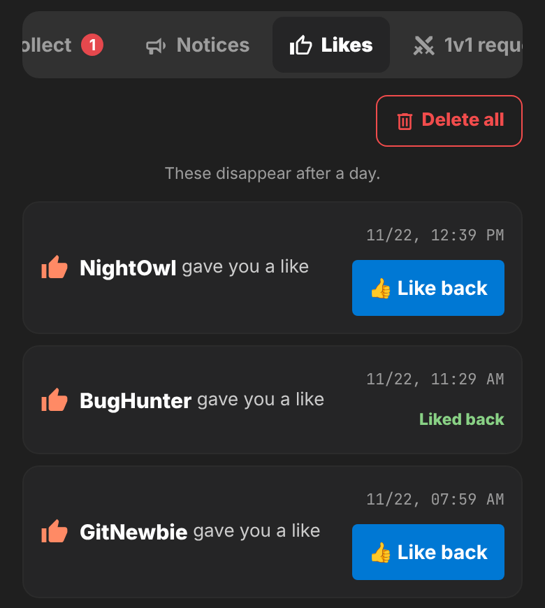
Tiers and rewards
The 6 tiers below Challenger are each split into 10 steps (e.g. Gold 1 to Gold 10), and each step you reach gives 1 reward. Tap Claim in the roadmap and it comes to your mailbox. From Challenger (30,000) only the number goes up, with no rewards.
| Tier | Starting likes | Per step | Total rewards for 10 steps |
|---|---|---|---|
| Bronze | 1 | 10 | 9 Standard Packs, 6,000 coins, 60 coffee, 40 CP |
| Silver | 100 | 20 | 6 Standard Packs, 4,000 coins, 90 coffee, 60 CP |
| Gold | 300 | 120 | 9 Standard Packs, 6,000 coins, 60 coffee, 40 CP |
| Platinum | 1,500 | 850 | 4 Rare Packs, 10,000 coins, 120 coffee, 50 CP, 9 Mythic shards |
| Diamond | 10,000 | 700 | 9 Epic Packs, 30,000 coins, 200 coffee, 200 CP |
| Master | 17,000 | 1,300 | 3 Legendary Packs, 40,000 coins, 2,000 coffee, 400 CP, and at Master 10 (28,700) 1 Mythic crew member + 30 Mythic shards |
| Challenger | 30,000 | - | Just the number, no rewards |
Step rewards rotate between packs, coins, coffee and CP. For example, Gold goes 3 Standard Packs, 2,000 coins, 30 coffee, 20 CP in turn, and Platinum steps 3, 6 and 9 are 3 Mythic shards.
From Silver (100), a tier mark appears next to your name in the Leaderboard and friend lists, and people with lots of likes also get a Top N% popular badge. Just liking back with friends every day gets you through Bronze and Silver fast. Step rewards only come in when you tap Claim, so check the Claim N badge on the roadmap now and then.
Git Blame Relay 🔍#
A weekly co-op where you team up with friends every week to find together the 30 errors hidden in 1 legacy file of 20,000 lines. Fixed lines keep the name of whoever fixed them. Coffee (hints) cannot be used, and there is no time limit. A new file opens Monday at midnight and closes Sunday at midnight (Korea time).
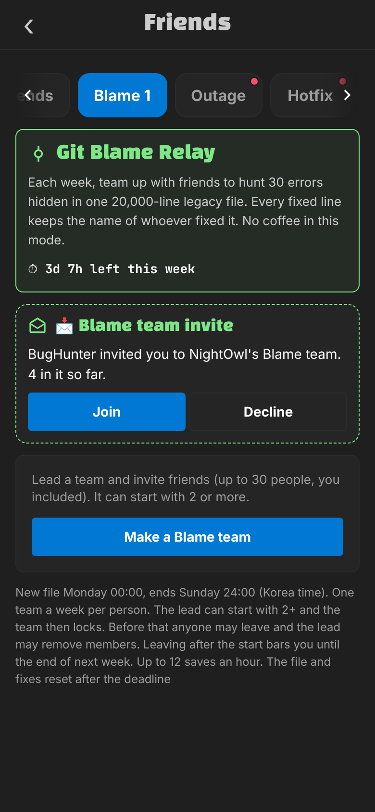
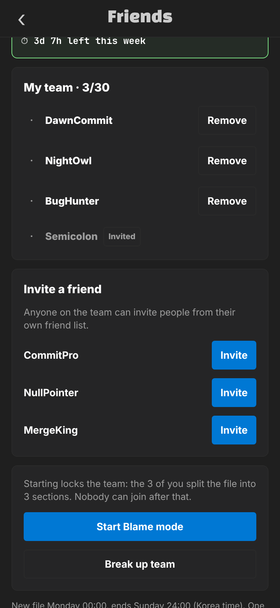
- Make or join a teamIn Home › Friend › the Blame tab, tap Make a Blame team and you become the leader. If a friend sent you a Blame team invite, enter with Join. Each person can be in only one team a week.
- Invite friendsAny member can Invite friends on their own friend list. A team is up to 30 people including you (pending invites count).
- StartOnce 2 or more have gathered, the leader taps Start Blame mode. Starting locks the team, and the file is split evenly into as many sections as there are members, one each (about 3,300 lines each with 6 people).
- Open the fileGo in with Open the file in the tab. Start with your own section, but you can also fix errors in other sections for them.
- SaveWhen you find an error, you must tap Save at the top for your name to go on the team record. If a friend saved the same error first, you get a merge conflict and that line belongs to whoever saved first.
- CheckPlant a flag on a line with Check, and next time Continue from my check takes you back to that spot. 1 per person.
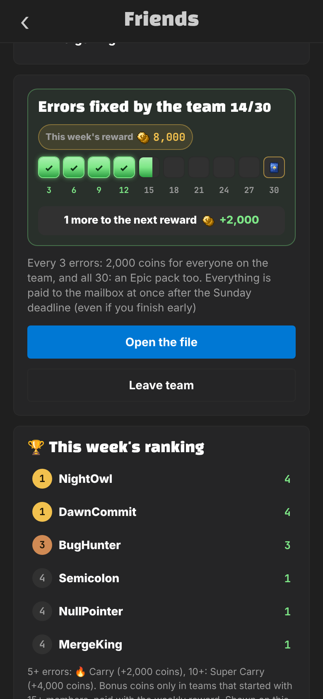
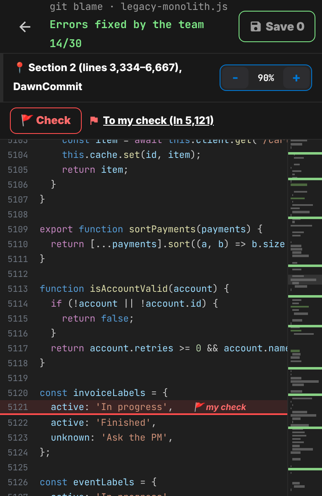
| Rewards (every member) | What you get |
|---|---|
| Every 3 errors the team fixes | 2,000 coins (10 steps) |
| All 30 | 20,000 coins + 1 Epic Pack |
| Carry bonus (only teams that started with 15 or more) | Fix 5 or more yourself for +2,000 coins, 10 or more for a super carry +4,000 coins |
| Max | 24,000 coins + 1 Epic Pack |
Even if you find everything early, rewards come to the mailbox all at once after the Sunday close. Only errors saved before the close count, so save what you find right away.
Before starting anyone can leave, and the leader can also Remove people. But if you leave a team that has started, you get no reward this week and cannot join next week's Blame either.
Today's nickname draw 🎰#
A draw that picks 5 people every day from those who checked in yesterday. There is nothing to sign up for; just check in and you are in the next day's draw. Slots 1 to 3 are open to everyone who checked in, and slots 4 and 5 are drawn from season pass holders. Anyone who won in the last 7 days is left out (with no limit if there are not enough people).
| Slot | Who | Reward |
|---|---|---|
| Slot 1 | Everyone who checked in yesterday | 3 Epic Packs |
| Slot 2 | Everyone who checked in yesterday | 1 Rare Pack |
| Slot 3 | Everyone who checked in yesterday | 100 coffee |
| Slot 4 | Season pass holders | 10,000 coins |
| Slot 5 | Season pass holders | 1,000 coffee |
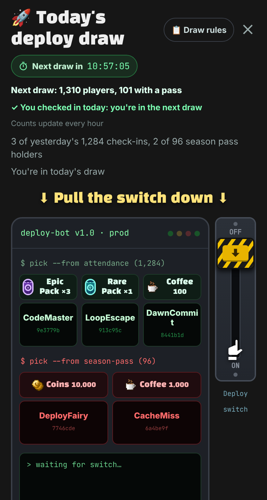
- Open the drawTap Go pull the switch on the Today's nickname draw card under the check-in sheet, or the draw card in the Notice tab of the mailbox.
- Pull the deploy switchPull the Deploy switch on the right down and the 5 slots spin, then stop on the winners one by one.
- Collect the prizeIf your nickname comes up, the prize goes to your mailbox the moment you finish watching the draw. You only need to watch within 7 days. You can see the result again as often as you like with Watch the draw again.
Next draw at the top of the screen updates every hour with the number who checked in today. If you see ✓ You checked in today: you're in the next draw, you are in tomorrow's draw. Check-in only works for signed-in accounts, so as a guest, sign in first.
Today's Hotfix 🔥#
A solo daily mission where 1 new code file opens every day at midnight (Korea time). Find every error and the reward comes to your mailbox the next day. Play it in Home › Friend › the Hotfix tab. A red dot shows on the tab if you haven't done it yet.
| Day | File | Code | Reward (mailbox, next day) |
|---|---|---|---|
| Weekdays (Mon to Fri) | 100 lines, 3 errors | Different code for each person | 2,000 coins + 10 coffee |
| Weekends (Sat to Sun) | 300 lines, 5 errors | The same code for every player | 3,000 coins + 20 coffee |
- Start the hotfixTap Start the hotfix in the tab (Continue when you carry on) to open the file.
- Tap the error linesTap a line you think is an error and it is recorded at once. There is no penalty for wrong taps and no time limit. Coffee hints cannot be used.
- BookmarkTap Bookmark then a line and a mark only you can see appears. Handy for noting how far you got.
- Done when you find them allWhen Patch shipped appears, you are done for today. The reward comes to your mailbox the next day, and the tab shows Yesterday's hotfix done!
If even one is left unfound when the day changes, there is no reward. The weekend hotfix is the same code for everyone, so you can talk it over with friends while you hunt.
Server Outage 🚨#
A weekly co-op where 1 codebase that every player fixes together opens every Monday at midnight (closes Sunday at midnight). Play it in Home › Friend › the Outage tab. Its size is set by last week's player count.
| Players last week | Codebase |
|---|---|
| 0 | 1,000 lines, 5 errors |
| 30 | 20,000 lines, 30 errors |
| More | Errors grow with the player count (up to 1,000,000 lines and 2,000 errors) |
- Pick a fileThe codebase is split into many files of about 2,000 lines each. The Files list shows each file's errors, how many are left, and how many people are looking at it now. Sort by Most errors left and open one.
- FindFor each error only the 1 person who finds it first gets credit. Lines someone else fixed carry their name. One person can find up to 10 a week.
- Deploy CheckOnce every error has been found, Deploy Check opens. It is your own 200-line file (3 errors), so even if you come late you can still fill your contribution.
- Fill 3 contribution pointsContribution is the errors you found plus the errors you found in Deploy Check. You need 3 or more to get that week's reward. Once you fill it, the red dot on the tab goes away.
| Reward (mailbox after the week ends, 3+ contribution points) | What you get |
|---|---|
| Coins | Up to 10,000 (by the share everyone fixed) |
| Coffee | Up to 20 (by the share everyone fixed) |
| 100% restored | 10,000 coins, 20 coffee, 1 Standard Pack |
For example, if everyone fixes only 40% before it ends, that is 4,000 coins and 8 coffee. How much everyone fixed sets the reward more than how many you found, so even after filling your 3 points, helping with files that have many errors left pays off for everyone. Last week's result is in Last week's outage result at the very top of the tab.
Friends and coffee ☕#
- Send coffee: 3 coffees once a day to each friend. It goes to their mailbox with your nickname, and they can send it right back from the mailbox with Coffee back. With 30 friends, just sending each other coffee every day is 90 coffee a day.
- Last seen: each friend shows their last visit, like ● Online just now or Seen 25 min ago. Tap a friend to open their profile (popularity, records, 1v1 challenge).
Adding friends
- Set a nicknameFriends are found by nickname. After signing in, set your nickname in the Leaderboard first.
- Request by nicknameIn Home › Friend, type the other player's exact nickname in the Add a friend by nickname box and tap Send request. If Request sent. appears, it worked. You can send 3 requests a day, and have up to 30 friends. If the other player had already sent you a request, you become friends right away.
- Request from the LeaderboardTap a name in the Leaderboard and a window opens below. Tap 👥 Add friend and it is sent at once. You can also look at their records first in their profile.
Received and sent requests
Tap Received in the tabs above the friend list to see requests sent to you. Accept and you are friends right away; Decline and the request disappears (the other player is not notified). The red circle button blocks them on the spot. In the Sent tab you can Cancel requests you sent.
Removing and blocking friends
The buttons on the right of a friend row are, in order, send coffee, a person shape (Remove) and a red circle (Block). Tapping asks you once more, so you can tap without worry.
- Remove: they only leave your friends. You can send a request again later.
- Block: they leave your friends and neither of you can send the other a friend request. Blocked players gather in the Blocked tab, and you can lift it any time with Unblock.
- Neither removing nor blocking notifies the other player. You can also Remove friend or Block from the Leaderboard or the profile window.
Turning off requests
If requests from strangers bother you, turn the Friend requests switch at the very bottom OFF. Nobody can send you requests, and pending ones disappear too. Your friend list stays as it is. The 1v1 requests switch below it sets whether you accept 1v1 code review challenges.
You can only invite people on your friend list to the Blame Relay. If you want a big weekly co-op, grow your friend count first.
Leaderboard 🏆#
| Tab | Ranked by | Tie-break |
|---|---|---|
| Extreme | Errors found in one Survival Extreme run (higher floors rank higher) | Whoever found more on the last floor, then whoever got there first |
| Classic | Classic stages cleared with ★★★ (★1 and ★2 don't count) | Whoever has the shorter total clear time on those stages |
| No coffee | Classic stages cleared with ★★★ without coffee hints | Whoever has the shorter total clear time |
| All-nighter | Highest All-Nighter Tower floor reached | Whoever got there first |
- Records go up automatically when you play. There is nothing to submit.
- There is a TOP 100 tab and an Around me tab that shows the 10 players above and below you.
- Tap a name to open that player's profile. From there you can like them, send a friend request, or challenge them to a 1v1 code review.
- The No coffee tab only lists records cleared in the no-coffee challenge (accounts that have seen the CTO ending).
1v1 code review ⚔️#
A 1v1 where you and another player compete to find 3 errors better in the same 200-line file. You don't need to be online at the same time: the challenger plays first and the other player plays the same file later. There is no currency reward; your profile keeps a 1v1 code review record (wins, draws, losses).
- Turn receiving onOthers can only challenge you once the 1v1 requests switch at the very bottom of the Friends tab is ON. It starts off.
- ChallengeOpen the other player's profile from the Leaderboard or your friend list, tap ⚔ Challenge to a 1v1 code review and play first. Only when you finish does the challenge go to their mailbox.
- AcceptThe other player taps Accept in the 1v1 requests tab of their mailbox and plays the same file. If they Decline, the challenger's play becomes void.
- ResultWhoever found more wins; if equal, the shorter time wins (to 0.1 seconds). If that is equal too, it is a draw. Each wrong tap adds 5 seconds.
Leaving mid-game or closing the app voids that game. If you accept and then often leave midway, you will not be able to play 1v1 for a while, so if you want to stop, tap Give up, which appears after 1 minute. Giving up compares the count and time you had so far.
Bug bounty 🐛#
A feature that rewards you for sending in game bugs or new content ideas. Open it with the Bounty icon at the top of Home. Rewards come to your account's mailbox, so only signed-in accounts can take part.
| Type | Grade | Base reward |
|---|---|---|
| Bug | Critical (cannot go on, currency or data lost) | 3 Legendary Packs, 10 Mythic shards, 3,000 coffee |
| Bug | High (a feature broken, wrong rewards) | 1 Legendary Pack, 1,500 coffee |
| Bug | Simple bug (when it was worth fixing and got fixed) | 1 Standard Pack, 2,000 coins (up to 1 Epic Pack and 10,000 coins) |
| Idea | Major idea (used in a major update) | 3 Legendary Packs, 100 Mythic shards (1 Mythic crew member of your choice), 5,000 coffee |
| Idea | Content idea (used as new content) | 2 Legendary Packs, 3,000 coffee |
As the app says: The rewards above are the standard guide. A reward of lower or higher value may be given instead. Rewards come to your mailbox.
- Pick a categoryTap Choose a category and pick from Serious currency bug, Stuck, cannot continue, Simple bug, Other bug and Content idea.
- Write it upFor a bug, write what happened, which screen you were on and what you tapped, how to make it happen again, and how it might be fixed. For an idea, describe the content, why it would be fun, and the screens, rules and rewards in detail. It must be at least 10 characters.
- SubmitTap Submit and you are done. The app version and device type go along with it. Reports you sent are in My reports at the very bottom of the screen.
The more specific you are, down to how to fix it, the better your chance of a higher grade for a bug. For a simple bug you don't need to know the fix.
Run perks (CP) 🎓#
Run perks are permanent bonuses you buy with CP. Buy them from Run perks on Home before a run starts; each step opens only after you buy the one before. The cost is the price of that one step. Buying all 74 steps across 27 rows takes 49,600 CP.
CP tiers: what to buy first?#
| Grade | Perk | About |
|---|---|---|
| Tier 1 | Family support, Iron body, Calm mind, Born negotiator, Severance fund, Experienced hire, Gym rat, Regular customer, Iron man | Perks like money, stamina, stress and promotion that you feel right away every run. Raise these first once you have CP |
| Tier 2 | CS degree, Green commit grid, Reference letter, People person, Fast learner, Career planning, Welcome kit, Head start, Born presenter, Genetic lottery, Health insurance, Frugal living, Weekend coder, Same school as the PM, Quick hands, Golden parachute | Nice to have, but not urgent. Buy them when tier 1 is maxed and you have CP left |
| Heroines only | Romantic at heart, Dating pro | Only needed when you aim for dating or marriage endings. Buy them when you have that goal, whatever the tier |
Every perk's effects#
| Perk | I | II | III |
|---|---|---|---|
| 💰 Family support | Starting balance +$2,308 | +$6,154 in total | +$13,846 in total |
| ⌨️ CS degree | Starting coding +10 | +20 in total | +30 in total |
| 📦 Green commit grid | Starting commits +50 | +100 in total | +150 in total |
| 📣 Reference letter | Starting reputation +10 | +15 in total | +20 in total |
| 🤝 People person | Starting affinity +5 | +10 in total | +15 in total |
| 💪 Iron body | Stamina use -5% | -10% in total | -15% in total |
| 🧘 Calm mind | Stress gain -5% | -10% in total | -15% in total |
| ⚡ Fast learner | Commits earned +15% | +30% in total | +45% in total |
| 📈 Born negotiator | Weekly pay +5% | +10% in total | +15% in total |
| 💰 Severance fund | Run-end coins +5% | +10% in total | +15% in total |
| 🎓 Career planning | Run-end CP +1 | +3 in total | +5 in total |
| 🎒 Welcome kit | Start with the rubber duck | Plus the desk plant | Up to the mechanical keyboard |
| 📚 Head start | Start knowing Git | Plus SQL | Up to TypeScript |
| 🎖️ Experienced hire | Start as Junior Dev (skip intern) | Start as Developer | — |
| 💌 Romantic at heart | Every match starts with affinity +4 (except Angie) | +7 in total | +10 in total |
| 🌹 Dating pro | Dates count +5% toward a proposal | +10% in total | +15% in total |
| 🏃 Gym rat | Each workout counts 1.5× (gym encounter) | 2× | — |
| 🎤 Born presenter | Review score +2 | +4 in total | +7 in total |
| 💇 Genetic lottery | Hair falls out at half speed | No hair loss from stress or burnout | — |
| 🛡️ Health insurance | The first burnout each run costs no reputation or hair | — | — |
| 🐷 Frugal living | Living costs -10% | -20% in total | -30% in total |
| 🌙 Weekend coder | Side progress +15% | +30% in total | +50% in total |
| 💪 Iron man | Start at 100 stamina | + stamina +1 every week | + stamina +3 every week in total |
| 🎓 Same school as the PM | Lead affinity starts at +4 | +7 in total | +10 in total |
| 🛍️ Regular customer | Consumable prices -5% | -10% in total | -15% in total |
| ⏱️ Quick hands | Ticket grade time +5% | +10% in total | +15% in total |
| 💼 Golden parachute | Burnout penalty halved (half the losses, 1 week of rest) | — | — |
CP cost list#
CP needed for each step. Each step opens only after you buy the one before. Buying everything is 49,600 CP.
| Perk | I | II | III | Total |
|---|---|---|---|---|
| 💰 Family support | 500 | 1,000 | 1,500 | 3,000 |
| ⌨️ CS degree | 200 | 400 | 600 | 1,200 |
| 📦 Green commit grid | 200 | 400 | 600 | 1,200 |
| 📣 Reference letter | 200 | 400 | 600 | 1,200 |
| 🤝 People person | 200 | 400 | 600 | 1,200 |
| 💪 Iron body | 500 | 1,000 | 1,500 | 3,000 |
| 🧘 Calm mind | 500 | 1,000 | 1,500 | 3,000 |
| ⚡ Fast learner | 200 | 400 | 600 | 1,200 |
| 📈 Born negotiator | 500 | 1,000 | 1,500 | 3,000 |
| 💰 Severance fund | 100 | 200 | 300 | 600 |
| 🎓 Career planning | 100 | 200 | 300 | 600 |
| 🎒 Welcome kit | 200 | 400 | 600 | 1,200 |
| 📚 Head start | 100 | 200 | 300 | 600 |
| 🎖️ Experienced hire | 200 | 400 | — | 600 |
| 💌 Romantic at heart | 1,000 | 2,000 | 4,000 | 7,000 |
| 🌹 Dating pro | 1,000 | 2,000 | 4,000 | 7,000 |
| 🏃 Gym rat | 100 | 200 | — | 300 |
| 🎤 Born presenter | 200 | 400 | 600 | 1,200 |
| 💇 Genetic lottery | 100 | 200 | — | 300 |
| 🛡️ Health insurance | 100 | — | — | 100 |
| 🐷 Frugal living | 500 | 1,000 | 1,500 | 3,000 |
| 🌙 Weekend coder | 200 | 400 | 600 | 1,200 |
| 💪 Iron man | 500 | 1,000 | 1,500 | 3,000 |
| 🎓 Same school as the PM | 200 | 400 | 600 | 1,200 |
| 🛍️ Regular customer | 500 | 1,000 | 1,500 | 3,000 |
| ⏱️ Quick hands | 100 | 200 | 300 | 600 |
| 💼 Golden parachute | 100 | — | — | 100 |
How to get through runs faster ⏩#
- Use the recommended planFree up to 20 times a run. Tapping it again in the same week changes nothing, so tap freely.
- Rush it only up to 2 weeksFrom the 3rd week a penalty kicks in. To break the streak, any grade from Do it myself is fine.
- Save up messagesThe run keeps rolling if you only answer the must-reply messages. But leaving people with affinity on read costs you.
- Experienced hireStarting as Junior Dev or Developer shortens the promotion route.
- If the ending you want has already slipped away, End this runEnd this run on Home throws the run away with no reward. No record stays and the run number is reused. It is for a quick restart when you are aiming for a specific ending.
- Faster with paid itemsTurn on both the Fast Track to CTO Planner (unlimited recommended plans + automatic every week + promotion skills automatic) and Machine Learning Autopilot for ⚡ Full auto: just answer messages and tap Next week.
Skipping too fast costs you. A run finished within 10 minutes gives no CP, coins, commit XP or run-completion quest, even at 100 weeks. Title endings (ending at weeks 20 to 34) count toward your run total but give no CP, coins or Finish a run quest.
Paid items in the shop (as on screen)#
Check the price shown in the store. This only lists what each item contains.
| Item | Contents |
|---|---|
| Ad-Free Pack | Rewards right away with no ads + double Survival and run rewards (permanent), 1,000 coffee |
| Machine Learning Autopilot | Handles tickets automatically each week at A to S, ON/OFF (rests at stress 70 or more), permanent |
| Fast Track to CTO Planner | Unlimited recommended plans + automatic every week + learns the skills needed for promotion automatically, permanent |
| All-in-One Pack | Monthly Work Pass (30 days) + Ad-Free + Fast Track to CTO Planner + Machine Learning (once per account) |
| Bond Reset Ticket | Resets 1 crew member's bond and chats, shows good replies with a yellow border (also for 5,000 coffee) |
| Secret Ending Notes | See every trigger condition in the ending codex, permanent (also for 10,000 coffee) |
| New Hire Welcome Pack | 600 coffee, 20,000 coins, 2 Rare Packs, 1 Epic Pack (once per account) |
| Promotion Pack | 2,500 coffee, 30,000 coins, 3 Mythic shards, 3 Epic Packs, 1 Legendary Pack (once per account) |
| Mythic Star Hire | 1 Mythic crew member + 150 Mythic shards + 180,000 coins + 2,000 coffee (once per account) |
| Season Pass / Season Pass Plus | Pass row rewards + a red nickname + a season badge / Plus starts 20 tiers ahead + 1 Legendary Pack |
| Monthly Work Pass | 2,000 coffee right away + 300 coffee every day for 30 days |
| Mythic Shard Pass | 30 shards right away + 1 shard and 1,000 coins every day for 30 days |
| Executive Pass | 3 Epic Packs and 3,000 coffee right away + 500 coffee and 1 Rare Pack every day for 30 days |
| Coffee | 500 / 2,800 / 6,000 / 16,000 / 36,000 coffee, double on the first purchase of each |
You can see every ending without paying. Survival gives plenty of coffee, and check-in, finished runs and the All-Nighter Tower give plenty of coins 🙌
Common beginner mistakes ⚠️#
5 weeks in a row of unhandled or rushed C ends the run. Rushing as an intern is almost always a C.
5 days of overtime drains about 39 stamina a week. Collapse and it is 1 week of sick leave; burnout is 2 weeks of rest and reputation -10. 3 burnouts is the fried chicken ending.
The check uses the week's lowest stamina and highest stress. If one reply takes you to 0, you collapse even if you rest on the weekend.
A run that doesn't reach 100 weeks gives 0 CP and coins. Quitting to found a startup, getting let go and the fried chicken ending are all the same.
Everything counts as left on read. Heroine and lead affinity drop.
1 to 300 is ★★★ as long as you make no wrong taps. Coffee is needed from stage 301, where the clock counts.
Even 1 short means overload (speed 1/4), so you almost always fail. Always check on the pre-start screen that team power is green.
30 days of check-in is 150 coffee, 30,000 coins, 10 Rare Packs, 1 Epic Pack and 1 Legendary Pack. Missing even one day is a waste.
FAQ#
- Classic stages or Career tracks: which first?
- Both give coffee, so start with whichever you like. Classic stages 1 to 300 are judged on wrong taps, so take it slow for ★★★; Career tracks have every chapter open, so you can pick and choose.
- I'm short on coffee.
- Survival Hard (24 coffees a run) is the most efficient. Also grab the ad free coffee (30) and the Survival double ad.
- Coins aren't piling up.
- Finishing a run to week 100 is the biggest (2,000 to 2,900 + 2,000 from daily quests). 1,000 a day from check-in and 100 for each first-cleared All-Nighter Tower floor add up steadily too.
- Do crew help with career tickets?
- No. Crew are for team projects only. Only the ticket passives (fewer errors) of Legendary and Mythic crew are the exception.
- I didn't get the tutorial reward.
- Check your mailbox. 1 Epic Pack comes once per account.
- The no-coffee switch won't turn on.
- Only accounts that have seen the CTO ending can turn it on.
- What do I get for each ending?
- When a run ends, each new ending sends a card pack (Rare for basic endings, Epic for title endings), and in Team tab › Codex you get each ending's reward again with Claim. Details are in the Ending codex.